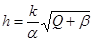
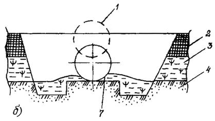
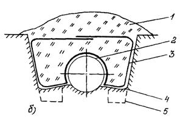
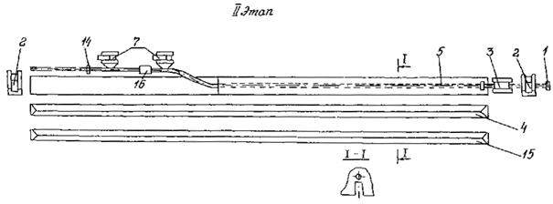
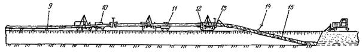
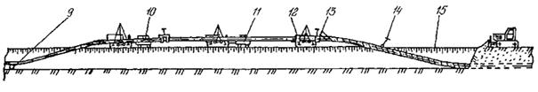
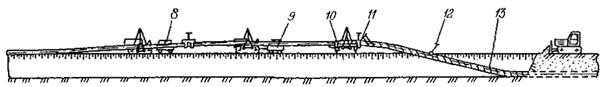
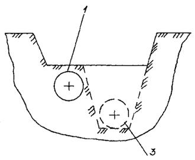
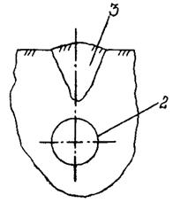
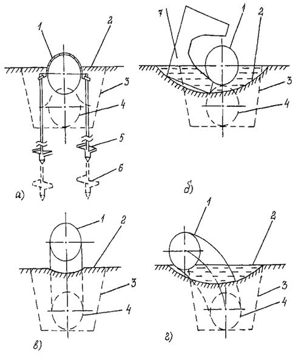

РОССИЙСКОЕ АКЦИОНЕРНОЕ ОБЩЕСТВО "ГАЗПРОМ"
ИНФОРМАЦИОННО-РЕКЛАМНЫЙ ЦЕНТР ГАЗОВОЙ ПРОМЫШЛЕННОСТИ
(ИРЦ ГАЗПРОМ)
ПРАВИЛА
ПРОИЗВОДСТВА РАБОТ
ПРИ КАПИТАЛЬНОМ РЕМОНТЕ
МАГИСТРАЛЬНЫХ ГАЗОПРОВОДОВ
ВСН 51-1-97
Москва 1997
РОССИЙСКОЕ АКЦИОНЕРНОЕ ОБЩЕСТВО "ГАЗПРОМ
ИНФОРМАЦИОННО-РЕКЛАМНЫЙ ЦЕНТР ГАЗОВОЙ ПРОМЫШЛЕННОСТИ (ИРЦ ГАЗПРОМ)
|
СОГЛАСОВАНО |
УТВЕРЖДЕНО |
|
Госгортехнадзор России |
Председателем Правления РАО "Газпром" |
|
(письмо от 17.01.97 N 10-03/18) |
Вяхиревым Р. И. |
|
20 февраля 1997 г. |
Ведомственные строительные нормы
ПРАВИЛА
ПРОИЗВОДСТВА РАБОТ ПРИ КАПИТАЛЬНОМ РЕМОНТЕ
МАГИСТРАЛЬНЫХ ГАЗОПРОВОДОВ
ВСН 51-1-97
Москва 1997
РАЗРАБОТАНЫ И ВНЕСЕНЫ:
Информационно-рекламным центром газовой промышленности (ИРЦ Газпром):
Н.Х. Халлыев, доктор техн. наук; В.Г. Селиверстов; Т.Н. Абасова; Н.Д. Куприна; Д.Г. Аликов
РАО "Газпром":
В.В. Ремизов, канд. техн. наук; Б.В. Будзуляк, канд. техн. наук; В.Н. Дедешко; А.И. Чистяков; К.М. Нагорнов; А.И. Парфенов
ВНИИгазом:
З.Т. Галиуллин, доктор техн. наук; И.И. Велиюлин, канд. техн. наук; А.Т. Лукомский; А.Д. Решетников, канд. техн. наук
Башкирским инженерным центром "Трубопрогресс" ДП "Баштрансгаз":
А.М. Мухаметшин, канд. техн. наук; Р.М. Аскаров, канд. техн. наук
ГАНГ им. И.М. Губкина:
В.Л. Березин, доктор техн. наук; Л.Г. Телегин, доктор техн. наук; Г.Г. Васильев, доктор техн. наук
ПОДГОТОВЛЕНЫ К УТВЕРЖДЕНИЮ
Управлением по транспортировке газа и газового конденсата РАО "Газпром";
Управлением проектно-изыскательских работ и экспертизы проектов РАО "Газпром":
С введением в действие настоящих "Правил производства работ при капитальном ремонте магистральных газопроводов" утрачивают силу:
"Правила производства капитального ремонта линейной части магистральных газопроводов" ВСН 2-112-79/Миннефтегазстрой
"Методы и правила производства капитального ремонта линейной части магистральных газопроводов в условиях болот и многолетнемерзлых грунтов" Дополнение ВСН 2-112-79/Миннефтегазстрой.
|
Российское акционерное общество "Газпром" |
Ведомственные строительные нормы |
ВСН 51-1-97 |
|
Правила производства работ при капитальном ремонте магистральных газопроводов |
Взамен ВСН 2-112-79/Миннефтегазстрой и дополнений к нему |
1.1. Ремонт линейной части магистральных газопроводов (ЛЧМГ) подразделяется на следующие основные виды: аварийный, текущий и капитальный.
Аварийный ремонт связан с ликвидацией аварий и повреждений на трубопроводах.
Текущий ремонт представляет собой комплекс работ по систематическому и своевременному проведению профилактических мероприятий:
ремонт изоляционных покрытий трубопроводов протяженностью до 500 м;
подсыпка площадок;
ремонт ограждений крановых площадок;
восстановление вдоль трассовых дорог;
восстановление проектной глубины заложения трубопроводов;
устранение утечек газа и др.
Под капитальным ремонтом магистрального газопровода понимается комплекс технических мероприятий, направленных на полное или частичное восстановление линейной части эксплуатируемого газопровода до проектных характеристик.
1.2. Капитальный ремонт разрешается производить только при наличии утвержденного проекта производства работ на отключенном и освобожденном от газа участке газопровода.
1.3. По характеру выполняемых работ капитальный ремонт ЛЧМГ подразделяется на следующие виды:
замена старой и дефектной изоляции;
замена изоляции и восстановление стенки трубы или частичная замена труб;
полная замена труб.
|
Внесены ИРЦ Газпром |
Утверждены
Председателем Правления |
Срок
введения |
1.4. Настоящие Правила распространяются на производство капитального ремонта линейной части магистральных газопроводов диаметром до 1420 мм включительно, проложенных в нормальных условиях, условиях болот и многолетнемерзлых грунтов.
1.5. Настоящие Правила не распространяются на:
промысловые газопроводы;
площадочные (технологические) газопроводы;
магистральные газопроводы наземной и надземной прокладки;
подводные газопроводы, требующие применения специальных средств для производства работ;
газопроводы системы газоснабжения.
1.6. При разработке проектной документации, организации работ, а также при производстве ремонтных работ на газопроводе следует руководствоваться следующими нормативными документами:
СНиП 2.02.01-83. Основания зданий и сооружений;
СНиП 2.05.06-85. Магистральные трубопроводы;
СНиП III-4-80*. Техника безопасности в строительстве;
СНиП III-42-80. Магистральные трубопроводы;
СНиП 3.01.01-85. Организация строительного производства;
СНиП 3.01.04-87. Приемка в эксплуатацию законченных строительством объектов. Основные положения;
СНиП 3.02.01-87. Земляные сооружения, основания и фундаменты;
СН 452-73. Нормы отвода земель для магистральных трубопроводов;
СНиП 11-01-95. Инструкция о порядке разработки, согласования, утверждения и составе проектной документации на строительство предприятий, зданий и сооружений;
ВСН 004-88/Миннефтегазстрой "Строительство магистральных и промысловых трубопроводов. Технология и организация";
ВСН 006-89/Миннефтегазстрой "Строительство магистральных и промысловых трубопроводов. Сварка";
ВСН 007-88/Миннефтегазстрой "Строительство магистральных и промысловых трубопроводов. Конструкции и балластировка";
ВСН 008-88/Миннефтегазстрой "Строительство магистральных и промысловых трубопроводов. Противокоррозионная и тепловая изоляция";
ВСН 011-8 8/Миннефтегазстрой "Строительство магистральных и промысловых трубопроводов. Очистка полости и испытание";
ВСН 012-88/Миннефтегазстрой "Строительство магистральных и промысловых трубопроводов. Контроль качества и приемка работ";
ВСН 013-88/Миннефтегазстрой "Строительство магистральных и промысловых трубопроводов в условиях вечной мерзлоты";
ВСН 014-89/Миннефтегазстрой "Строительство магистральных и промысловых трубопроводов. Охрана окружающей среды";
РД 102-011-89/Миннефтегазстрой "Охрана труда";
Правилами охраны магистральных трубопроводов, утвержденными постановлением Госгортехнадзора России от 24 апреля 1992г., № 9;
ВСН 51-1-80/Мингазпром "Инструкция по производству строительных работ в охранных зонах магистральных трубопроводов Министерства газовой промышленности ;
ВСН 179-85 "Инструкция по рекультивации земель при строительстве трубопроводов";
Типовой инструкцией по безопасному ведению огневых работ на газовых объектах Мингазпрома СССР, утвержденной Министерством газовой промышленности СССР 03.08.88;
РД 51-108-86/Мингазпром "Инструкция по технологии сварки и резки труб при производстве ремонтно-восстановительных работ на магистральных газопроводах";
Правилами технической эксплуатации магистральных газопроводов, утвержденными Мингазпромом СССР 22.03.88;
Правилами безопасности при эксплуатации магистральных газопроводов, утвержденными Мингазпромом СССР 16.03.84;
Инструкцией по освидетельствованию, отбраковке и ремонту труб в процессе эксплуатации и капитального ремонта линейной части магистральных газопроводов, М., ВНИИгаз, 1991;
Правилами техники безопасности при строительстве магистральных стальных трубопроводов, М., "Недра", 1982;
Нормами времени на капитальный ремонт магистральных газопроводов, ВНИИЭгазпром, 1989;
Положением о техническом надзоре заказчика за качеством строительства (реконструкции) и капитального ремонта объектов газовой промышленности, согласованным 10.12.94 Госгортехнадзором РФ и утвержденным 20.12.94 РАО "Газпром", с дополнением, изложенным в письме Госгортехнадзора РФ от 24.07.95 № 10-03/263;
Временной методикой освидетельствования соединительных деталей трубопроводов (СДТ), не имеющих документального оформления, утвержденной РАО "Газпром" и согласованной Госгортехнадзором РФ (от31.03.95№ 10-03/111);
Руководящим документом по применению материалов фирмы "Диамант" для ремонтных работ на объектах нефтяной и газовой промышленности, утвержденным РАО "Газпром" и согласованным Госгортехнадзором РФ (от 12.10.95 № 10-03/361);
Временным положением о проведении работ по диагностированию газопроводов РАО "Газпром" внутритрубными инспекционными снарядами, утвержденным РАО "Газпром" 31.08.95;
ГОСТ 25812-83. Трубопроводы стальные магистральные. Общие требования к защите от коррозии;
ГОСТ 9.602-89. Сооружения подземные. Общие требования к защите от коррозии;
ГОСТ 17.4.3.04-85. Охрана природы. Почвы. Общие требования к контролю и охране от загрязнения;
ГОСТ 17.1.3.13-86. Охрана природы. Гидросфера. Общие требования к охране поверхностных вод от загрязнения;
ГОСТ 17.1.3.06-82. Охрана природы. Гидросфера. Общие требования подземных вод;
ГОСТ 17.5.3.04-83*. Охрана природы. Земли. Общие требования к рекультивации земель;
ГОСТ 17.5.3.06-85. Охрана природы. Земли. Требования к определению норм снятия плодородного слоя почвы при производстве земляных работ;
ГОСТ 12.1.004-91. Пожарная безопасность. Общие требования;
ГОСТ 12.4.026-76. Цвета сигнальные и знаки безопасности;
ГОСТ 23407-78. Ограждение инвентарных строительных площадок и участков производства строительно-монтажных работ. Требования безопасности.
1.7. Настоящие Правила обязательны для применения на предприятиях РАО "Газпром".
2.1.1. Комплексные обследования ЛЧМГ производятся организациями, имеющими лицензии на проведение работ, текущие обследования (осмотры) - бригадами линейно-эксплуатационных служб (ЛЭС), лабораториями ЭХЗ, линейными обходчиками.
2.1.2. Программы, методики и сроки проведения обследований, их периодичность и объемы должны разрабатываться газотранспортными предприятиями с привлечением проектных организаций.
2.1.3. Обследование ЛЧМГ состоит из осмотра и обследования с применением технических средств и оборудования.
2.1.4. Осмотры, как правило, выполняются ЛЭС с использованием транспортных средств: вертолетов, самолетов, автотранспорта или пешим обходом. Способ осмотров и их периодичность устанавливаются газотранспортным предприятием.
2.1.5. Целью осмотра является выявление:
вскрытии, оголении, нарушений балластировки, потери устойчивости газопроводов;
утечек;
предаварийных состояний и аварий;
состояния запорной арматуры;
состояния средств ЭХЗ;
других неполадок и повреждений;
аварий на близлежащих сооружениях и объектах, реально угрожающих целостности газопровода.
2.1.6. Обнаруженные при осмотрах нарушения, повреждения и отказы должны регистрироваться в журнале осмотра ЛЧМГ.
При обнаружении повреждений, характер и размеры которых, по оценке лица, выполняющего осмотр, могут привести к аварии, осмотр прекращается и немедленно извещается руководство газотранспортного предприятия о характере обнаруженных повреждений.
Обследование газопроводов, проложенных в горных местностях, должно включать осмотр оползневых мест вблизи газопроводов.
2.1.7. Целью обследования с применением технических средств и оборудования является:
выявление коррозионных и эрозионных повреждений, трещин и других дефектов металла путем проведения внутритрубной или бесконтактной дефектоскопии или с использованием аппаратуры акустической эмиссии;
измерение механических напряжений металла, деформаций и перемещений участков газопровода;
электрометрическое обследование и шурфование с визуальной и инструментальной оценкой состояния изоляции и металла трубы;
уточнение размеров свищей и величин утечек газа.
2.1.8. Обследование газопроводов внутритрубными инспекционными снарядами производится в соответствии с "Временным положением о проведении работ по диагностированию газопроводов РАО "Газпром" внутритрубными инспекционными снарядами".
2.1.9. По результатам обследования, оформленным актом, и предварительным рекомендациям организаций, проводивших обследование, газотранспортное предприятие проводит работу по выполнению исполнительных чертежей, составлению дефектных ведомостей, которые являются основой для разработки проектно-сметной документации (ПСД) и проекта производства работ (ППР), в том числе для выбора способа ремонта.
2.2.1. Планы ремонтных работ единой системы газоснабжения (ЕСГ) разрабатывают на основе предложений газотранспортных предприятий, представляемых в РАО "Газпром" не позднее чем за один квартал до начала планируемого периода.
2.2.2. План ремонтных работ должен включать:
объемы ремонтных работ на ЛЧМГ по газотранспортному предприятию в физическом измерении с указанием применяемых технологий ремонта и непосредственного исполнителя работ;
потребности газотранспортного предприятия в материально-технических ресурсах (трубы, изоляционное покрытие, материалы и оборудование) для проведения ремонтных работ;
ориентировочные объемы финансирования ремонтных работ в целом по РАО "Газпром" и по каждому газотранспортному предприятию в отдельности.
2.2.3. Планы ремонтных работ на ЛЧМГ ЕСГ утверждает руководство РАО "Газпром".
Проектно-техническая документация
2.3.1. Капитальный ремонт линейной части магистрального газопровода должен производиться на основании проектно-сметной документации.
2.3.2. При разработке ПСД должны быть использованы прогрессивные технические и технологические решения с учетом новейших достижений науки, техники и практики ремонта трубопроводов.
2.3.3. Проектно-сметную документацию на производство капитального ремонта ЛЧМГ разрабатывает заказчик, т.е. эксплуатирующая газопровод организация, или - по его заказу - проектная организация и согласовывает ее с подрядной организацией не позднее чем за два месяца до начала основных работ.
2.3.4. Проектно-сметная документация передается заказчиком в трех экземплярах всех рабочих чертежей и смет генеральному подрядчику и по два экземпляра для каждой субподрядной организации, участвующей в ремонте газопровода.
2.3.5. Проект производства работ (ППР) - основной документ по организации всех видов работ - разрабатывает генеральный подрядчик после получения от заказчика исходных данных и документов в полном объеме.
2.3.6. В состав ППР должны входить:
генеральный план ремонта ЛЧМГ;
график производства ремонта ЛЧМГ;
пояснительная записка;
график поступления материалов, необходимых для ремонта;
технологические карты на сложные работы и работы, выполняемые новыми методами;
транспортная схема ремонта ЛЧМГ.
2.3.7. Генеральный план ремонта ЛЧМГ включает в себя:
трассу газопровода;
расположение населенных пунктов;
километраж трассы;
систему эксплуатационной связи;
компрессорные станции;
дома линейных ремонтеров;
вертолетные площадки;
расположение линейной арматуры по трассе;
размещение полевых жилых городков;
временные сооружения и дороги;
переходы через естественные и искусственные препятствия;
схемы подъездных путей;
пересечения подземных коммуникаций по трассе газопровода.
2.3.8. График производства ремонта ЛЧМГ является основным руководящим документом и составляется на весь ремонтный сезон с учетом климатических, гидрогеологических условий и особенностей эксплуатации каждого газопровода.
2.3.9. График составляют с разбивкой по месяцам для ремонтируемого участка с указанием плановых и фактических сроков выполнения основных видов работ.
2.3.10. Графики поступления материалов, машин и механизмов на трассу ремонтируемого газопровода составляют с разбивкой по месяцам и подекадно. Корректируют графики в связи с последующим уточнением поставки необходимых материалов, машин и механизмов.
2.3.11. Пояснительная записка в ППР включает следующие данные:
расчет продолжительности ремонта ЛЧМГ;
расчет числа ремонтно-строительных потоков и распределение их по производственным участкам;
расчет потребности в ресурсах;
порядок и методы производства ремонта ЛЧМГ по отдельным видам работ;
основные технико-экономические показатели;
мероприятия по охране труда и технике безопасности;
мероприятия по охране окружающей среды.
Материально-техническое обеспечение
2.3.12. Организации-заказчики и подрядные организации, выполняющие работы на договорной основе, должны обеспечивать объекты ремонта необходимыми материально-техническими ресурсами в соответствии с технологической последовательностью производства работ и в сроки, установленные графиками производства ремонта и графиками поступления материалов, машин и механизмов на трассу.
2.3.13. Доставку на трассу необходимых машин и механизмов, материалов осуществляют железнодорожным, водным и автомобильным транспортом, а в некоторых случаях и воздушным.
2.3.14. Все материалы хранят непосредственно у места базирования ремонтно-строительного потока на временно сооруженных складах и на трассу доставляют согласно графику.
2.3.15. Организация транспортирования, складирования и хранения материалов, деталей, конструкций и оборудования должна соответствовать требованиям стандартов и технических условий и исключать возможность их повреждения, порчи и потерь.
Инженерная подготовка вдольтрассовых объектов и газопровода к ремонту
2.3.16. Подготовка к ремонту газопровода должна предусматривать изучение инженерно-техническим персоналом проектно-сметной документации и разработку проектов производства работ на внеплощадочные и внутриплощадочные подготовительные работы.
2.3.17. Внеплощадочные подготовительные работы должны включать строительство и содержание временных подъездных дорог к трассе газопровода, базам по хранению и подготовке изоляционных материалов, строительство временных коммуникаций для обеспечения полевых городков, ремонтных баз и пунктов технического обслуживания машин и механизмов электроэнергией, водой, связью.
2.3.18. При выполнении внутриплощадочных подготовительных работ заказчику необходимо:
обозначить на местности местоположение ремонтируемого и прилегающих газопроводов, а также пересечения ремонтируемого газопровода со всеми коммуникациями;
освободить ремонтируемый участок от газа и конденсата;
отключить станции катодной и дренажной защиты на участке газопровода, подлежащего ремонту;
обеспечить связью ремонтно-строительные потоки с диспетчерской службой и ближайшей компрессорной станцией;
передать по акту подрядчику трассу ремонтируемого газопровода. Форма акта приведена в Приложении 1 (Форма № 1).
2.3.19. Сооружение временных дорог допускается только при невозможности использования постоянных существующих и запроектированных дорог.
Конструкция временных дорог должна обеспечивать движение строительной техники и перевозку максимальных по массе и габаритам строительных грузов.
2.4.1. Работы по ремонту линейной части магистральных газопроводов, как правило, должны выполнять ремонтно-строительные потоки.
В состав ремонтно-строительных потоков должны входить бригады, выполняющие отдельные виды работ.
Небольшие объемы ремонтных работ допускается выполнять комплексными бригадами, осуществляющими все виды работ.
2.4.2. Состав бригад рабочих должен устанавливаться в зависимости от планируемых объемов, трудоемкости и сроков выполнения работ.
2.4.3. Организация труда рабочих должна обеспечивать:
применение высокопроизводительных методов в соответствии с проектами производства работ и технологическими картами;
бесперебойное снабжение материально-техническими ресурсами;
применение прогрессивных форм и систем оплаты и стимулирования труда.
2.4.4. Охрану труда рабочих следует обеспечивать путем выдачи администрацией необходимых средств индивидуальной защиты (специальной одежды, обуви и др.), выполнения мероприятий по коллективной защите рабочих (ограждения, освещение, вентиляция, защитные и предохранительные устройства и приспособления и др.), установки санитарно-бытовых помещений и устройств в соответствии с действующими нормами и характером выполняемых работ.
Рабочим должны быть созданы необходимые условия труда, питания и отдыха.
2.4.5. В процессе производства ремонтно-строительных работ должны соблюдаться требования нормативных документов по технике безопасности.
2.5.1. Контроль качества ремонтно-строительных работ на ЛЧМГ должен осуществляться исполнителями, специальными службами подрядчика и заказчика, технадзором, а также, в порядке авторского надзора, представителями проектных институтов в соответствии с действующими нормами и правилами.
2.5.2. Производственный контроль качества ремонтно-строительных работ должен включать операционный контроль отдельных ремонтных процессов и приемочный контроль ремонтно-строительных работ.
2.5.3. Операционный контроль должен осуществляться в ходе выполнения технологических операций по ремонту ЛЧМГ и обеспечивать своевременное выявление дефектов и принятие мер по их устранению и предупреждению.
При операционном контроле следует проверять соблюдение технологии выполнения ремонтно-строительных работ; соответствие выполняемых работ рабочим чертежам, строительным нормам, правилам и стандартам.
Особое внимание следует обращать на выполнение ремонтно-строительных работ в районах с оползнями, вечной мерзлоты, на болотах.
При операционном контроле следует руководствоваться схемами операционного контроля качества, входящими в состав технологических карт.
Схемы операционного контроля качества, как правило, должны содержать эскизы конструкций с указанием допускаемых отклонений в размерах, перечни операций или процессов, контролируемых производителем работ с участием, при необходимости, других служб специального контроля, данные о составе, сроках и способах контроля.
2.5.4. При приемочном контроле необходимо производить проверку и оценку качества выполненных ремонтно-строительных работ.
2.5.5. Освидетельствованию с составлением актов и разрешений подлежат все виды производимых ремонтных работ.
Выполнение последующих работ при отсутствии актов освидетельствования предшествующих работ запрещается.
2.5.6. Приемку работ проводит технадзор заказчика.
2.6.1. При приемке отремонтированного газопровода в эксплуатацию необходимо соблюдать действующее законодательство и нормативные требования по вопросам приемки объектов в эксплуатацию.
2.6.2. Отремонтированный участок газопровода принимается в эксплуатацию по акту комиссией, назначаемой приказом или распоряжением по газотранспортному предприятию.
Акт о приемке газопровода в эксплуатацию должен быть утвержден заказчиком. Форма акта приведена в Приложении 1 (Форма № 2).
2.6.3. Подрядчик (генеральный подрядчик) представляет комиссии следующую документацию:
перечень организаций, участвовавших в производстве ремонтно-строительных работ на ЛЧМГ, с указанием видов выполняемых ими работ и фамилий инженерно-технических работников, непосредственно ответственных за выполнение этих работ;
комплект исполнительной документации на ремонт газопровода, предъявляемого к приемке;
ведомость отступлений от проекта и согласования этих отступлений с проектной организацией;
сертификаты, технические паспорта или другие документы, удостоверяющие качество материалов, конструкций и деталей, применяемых при производстве ремонтно-строительных работ;
акты промежуточной приемки отдельных видов работ;
акты на скрытые работы.
2.6.4. Вся документация, перечисленная в п. 2.6.3 настоящих Правил, после окончания работы комиссии должна храниться у заказчика.
3.1.1. Способ производства ремонта ЛЧМГ следует определять по технологическому набору ремонтно-строительных работ для достижения конечной цели ремонта. Это может быть:
замена поврежденного изоляционного покрытия трубопровода при отсутствии повреждений металла трубы;
замена поврежденного изоляционного покрытия трубопровода с предварительной заваркой каверн металла труб, приваркой заплат и муфт на стенки труб;
замена поврежденного изоляционного покрытия трубопровода с предварительной заваркой каверн металла труб, приваркой заплат и муфт на стенки труб, выбраковкой и вырезкой участков, не, подлежащих ремонту;
прокладка новой нитки трубопровода параллельно действующей с последующим отключением старой нитки, извлечением, ремонтом и повторным использованием ее для различных нужд.
3.1.2. Допускается частичная замена изоляционного покрытия газопровода при условии усиления электрохимической защиты трубопровода до уровня, обеспечивающего его коррозионную защищенность.
3.1.3. Технология производства работ по прокладке новой нитки газопровода параллельно действующей аналогична технологии строительства нового трубопровода.
Технологические схемы ремонта магистральных газопроводов приведены в Приложении 2.
3.2.1. Подготовительные работы при капитальном ремонте газопроводов включают:
определение оси трассы и глубины заложения газопровода;
планировку трассы.
3.2.2. Положение газопровода определяют специальными трассо-искателями или шурфованием.
3.2.3. Результаты измерений глубины заложения газопровода наносят на колышки, забиваемые строго по оси трубопровода через 50 м, а на участках с малой глубиной заложения и сильно пересеченным микрорельефом - через 25 м.
3.2.4. Работы по планировке участка ремонтируемого газопровода начинают после получения письменного разрешения на производство работ от заказчика и определения действительной глубины залегания газопровода.
3.2.5. Планировочные работы в основном заключаются в срезке валика, бугров, неровностей, подсыпке низинных мест.
3.2.6. Подготовительные работы на ремонтируемом участке газопровода должны осуществляться после оформления в установленном порядке отвода земельных участков. При этом ширина полосы отвода земель принимается в соответствии с действующими нормативами и заблаговременно согласовывается заказчиком с землепользователями и лесничествами.
3.2.7. При проведении подготовительных работ необходимо обозначить колышками все пересечения газопроводом подземных коммуникаций (трубопроводы, силовые кабели, кабели связи и др.). Места пересечений, обозначенные колышками, должны быть подтверждены представителями организаций, эксплуатирующих указанные коммуникации.
3.3.1. Земляные работы при ремонте газопроводов следует выполнять в строгом соответствии с проектно-технической документацией.
Вскрытие действующих коммуникаций (трубопроводы, кабели и др.) должно производиться в присутствии представителей организаций, эксплуатирующих эти коммуникации.
3.3.2. При пересечении трассы с действующими подземными коммуникациями разработку грунта механизированным способом следует производить с учетом требований СНиП 3.02.01-87, на расстоянии не ближе 2 м от боковой стенки и не менее 1 м над верхом коммуникаций (трубы, кабели и др.). Оставшийся грунт должен дорабатываться вручную и с принятием мер, исключающих возможность повреждения этих коммуникаций.
3.3.3. После вскрытия экскаватором участки защемленного газопровода, а также участки, примыкающие к кранам, тройниковым соединениям, отводам и др., дорабатываются вручную. Длина такого участка в одну сторону составляет для трубопроводов диаметром до 700 мм - 40 м, 700 мм и более - 50 м.
3.3.4. Работы по снятию и восстановлению плодородного слоя почвы должны производиться в соответствии с проектно-сметной документацией, разработанной с учетом требований действующих нормативных документов.
3.3.5. Минимальная ширина полосы, с которой снимается плодородный слой почвы, равняется ширине траншеи по верху плюс 0,5 м в каждую сторону, максимальная - ширине полосы отвода.
3.3.6. Плодородный слой почвы (глубина снятия определяется по ГОСТ 17.5.3.06-85) должен быть снят и перемещен во временный отвал. Снятие почвы и перемещение ее в отвал следует производить бульдозерами продольно-поперечными ходами при толщине слоя до 20 см и поперечными - при толщине слоя более 20 см.
3.3.7. Снятие плодородного слоя рекомендуется производить на всю толщину, по возможности за один проход или послойно за несколько проходов. Не допускается смешивание плодородного слоя почвы с минеральным грунтом.
3.3.8. Поперечный профиль и размеры разрабатываемой траншеи устанавливаются проектно-сметной документацией в зависимости от принятого способа ремонта, диаметра ремонтируемого газопровода, габаритных размеров ремонтных машин и механизмов и указываются в проекте производства работ.
Схемы разработки траншеи приведены в Приложении 3.
3.3.9. При капитальном ремонте заглубление газопроводов до верха трубы, а также ширину траншеи по низу надлежит принимать с учетом требований СНиП 2.05.06-85.
3.3.10. Траншеи с вертикальными стенками без крепления разрабатываются в грунтах естественной влажности с ненарушенной структурой при отсутствии грунтовых вод на глубину не более, м:
в насыпных песчаных и гравелистых грунтах - 1,00;
в супесях - 1,25;
в суглинках и глинах - 1,50;
в особо плотных не скальных грунтах - 2,00.
3.3.11. Для рытья траншей большей глубины необходимо устраивать откосы различного заложения в зависимости от состава грунта и его влажности (Приложение 4).
3.3.12. В водонасыщенных грунтах вскрытие газопровода следует начинать с пониженных мест для спуска и откачки воды. При значительном притоке воды пониженное место должно выноситься в сделанное для этой цели расширение траншеи, где устраивается небольшой колодец для откачки воды.
3.3.13. Выбор типа землеройного механизма для разработки траншей при капитальном ремонте газопровода на отдельных участках трассы зависит от местных топографических и гидрогеологических условий, принятого способа ремонта и темпа работ, диаметра газопровода, времени года и других условий.
3.3.14. Грунт, извлеченный из траншей, следует укладывать в отвал с одной стороны траншеи, оставляя другую сторону свободной для передвижения ремонтно-строительной техники.
3.3.15. Во избежание обвала вынутого грунта в траншею, а также обрушения стенок траншеи основание отвала вынутого грунта следует располагать в зависимости от состояния грунта и погодных условий, но не ближе 0,5 м от края траншеи.
3.3.16. До начала работ по засыпке отремонтированного и уложенного в траншею газопровода необходимо провести восстановление устройств электрохимзащиты.
3.3.17. Засыпать траншею следует непосредственно после выполнения изоляционно-укладочных работ (в течение одной смены). При засыпке газопровода необходимо обеспечить сохранность труб и изоляционного покрытия, а также плотное прилегание газопровода к дну траншеи.
3.3.18. В скальных, щебенистых грунтах, а также сухих комковатых и мерзлых грунтах газопроводы укладывают в траншею на подсыпку из мягкого грунта толщиной не менее 10 см над выступающими неровностями основания траншеи и таким же грунтом присыпают на 20 см над верхней образующей.
3.3.19. Засыпку траншеи минеральным грунтом осуществляют бульдозером (траншеезасыпателем) с обеих или с одной стороны. В отдельных случаях допускается засыпка траншеи грунтом одноковшовыми экскаваторами.
3.3.20. После естественного или искусственного уплотнения грунта выполняют техническую рекультивацию, которая заключается в возвращении плодородного слоя почвы на нарушенную площадь.
3.3.21. После завершения технической рекультивации выполняют биологическую рекультивацию, предусматривающую проведение комплекса агротехнических мероприятий, а именно: подготовку почвы, внесение органических и минеральных удобрений, подбор и посев семян трав и травосмесей.
3.3.22. Приведение земельных участков с плодородным слоем почвы в исходное состояние производят в ходе работ.
3.4.1. При капитальном ремонте технологические операции по подъему и укладке газопровода, как правило, выполняют совмещенным способом.
3.4.2. Технологические параметры ремонтно-строительных потоков при подъеме и укладке газопровода, расстояния между лежками назначают исходя из результатов расчета газопровода на прочность с учетом требований СНиП 2.05.06-85.
3.4.3. Работы по подъему и укладке ремонтируемого газопровода разрешается выполнять после полного освобождения его от газа, конденсата и получения разрешения диспетчера и заказчика.
Для обеспечения безопасного проведения работ давление оставшегося в трубопроводе газа должно находиться в пределах 100-500 Па.
3.4.4. Работы по подъему и укладке газопровода разрешается производить только в присутствии лица, прошедшего проверку знаний в установленном порядке и ответственного за производство работ.
3.4.5. Перед подъемом газопровода должны быть выполнены все мероприятия, обеспечивающие безопасность его проведения и предотвращающие возникновение аварийных ситуаций.
3.4.6. Подъем и укладку газопровода следует осуществлять плавно, без рывков и резких колебаний.
3.4.7. Начало или конец поднимаемого участка газопровода должны находиться от линейных кранов или других мест защемления на расстоянии:
для газопроводов диаметром до 700 мм - не менее 40 м, 700 мм и свыше - не менее 50 м.
3.4.8. На время длительных остановок и в конце смены газопровод следует укладывать на лежки.
3.4.9. Работы по очистке поверхности газопровода при ремонте проводят в два этапа:
предварительный - очистка газопровода от старой изоляции;
окончательный - подготовка поверхности газопровода, проводимая после выполнения сварочно-восстановительных работ, перед нанесением нового изоляционного покрытия.
3.4.10. Очистку газопровода от старой изоляции и продуктов коррозии производят механическим способом специальными резцами, металлическими щетками, тросом (по специальной технологии), а также водяной струёй под давлением.
3.4.11. В местах, где механизированная очистка невозможна, разрешается очистку наружной поверхности газопровода от старой изоляции выполнять вручную с использованием щеток и скребков. При этом не допускается нанесение царапин, рисок, сколов основного металла и срезание сварных швов.
3.4.12. Очистка должна обеспечивать последующий визуальный осмотр и приборное обследование поверхности трубопровода.
3.5.1. После очистки газопровода от старой изоляции и продуктов коррозии приступает к работе комиссия по отбраковке труб.
3.5.2. Отбраковку труб осуществляют в соответствии с требованиями Инструкции по освидетельствованию, отбраковке и ремонту труб в процессе эксплуатации и капитального ремонта линейной части магистральных газопроводов (ВНИИгаз, М., 1991).
3.5.3. Газопровод на всем протяжении обследуют со всех сторон, т.е. по всему периметру, для выявления характера повреждения стенки трубы. Место дефекта на трубе обводят и нумеруют несмываемой краской.
Размеры дефекта (глубину, длину, ширину) замеряют. По результатам обследования трубопровода составляют акт.
3.5.4. Технологические операции по заварке дефектов, резке и сварке стыков катушек выполняют в соответствии с требованиями РД 51-108-86 "Инструкция по технологии сварки и резки труб при производстве ремонтно-восстановительных работ на магистральных газопроводах" .
3.5.5. Огневые работы на газопроводе производят в соответствии с требованиями Типовой инструкции по безопасному ведению огневых работ на газовых объектах Мингазпрома СССР, 1988.
3.5.6. Технологические операции по ремонту дефектов на газопроводе холодной сваркой с применением композитных материалов выполняют в соответствии с требованиями Руководящего документа по применению материалов фирмы "Диамант" для ремонтных работ на объектах нефтяной и газовой промышленности, утвержденного РАО "Газпром" и согласованного Госгортехнадзором РФ от 12.10.95 N 10-03/361.
3.6.1. Изоляционно-укладочные работы при капитальном ремонте магистральных газопроводов выполняют в следующей последовательности:
окончательная очистка газопровода;
нанесение грунтовки (праймера);
нанесение нового изоляционного покрытия;
укладка газопровода на дно траншеи.
3.6.2. Степень очистки наружной поверхности газопровода перед нанесением нового изоляционного покрытия отечественного производства должна отвечать требованиям ВСН 008-88.
3.6.3. Степень очистки наружной поверхности газопровода перед нанесением изоляционных покрытий импортного производства должна отвечать требованиям, указанным в технических условиях на эти покрытия.
3.6.4. Для защиты газопроводов от коррозии применяют покрытия на битумной основе, из полимерных пленочных материалов и другие виды изоляции.
3.6.5. При выборе типов и конструкций противокоррозионных покрытий, а также технологии их нанесения на газопровод следует руководствоваться ВСН 008-88 и СНиП 2.05.06-85.
3.6.6. При ремонте газопровода с заменой труб можно применять трубы с изоляционным покрытием, нанесенным в заводских или базовых условиях. В этих случаях на трассе выполняют работы по очистке и изоляции сварных стыков.
3.6.7. При выполнении изоляционно-укладочных работ газопровод укладывают в траншею совмещенным способом, при котором работы по очистке, изоляции и укладке трубопроводов производят в едином технологическом потоке.
3.6.8. Изоляционные покрытия наносят на подготовленную и загрунтованную поверхность газопровода механизированным способом.
3.7.1. При капитальном ремонте магистральных газопроводов следует производить:
очистку полости, испытание на прочность и проверку на герметичность газопровода при ремонте с заменой труб;
испытание на прочность и проверку на герметичность трубопровода при ремонте с выполнением сварочно-восстановительных работ и заменой изоляционного покрытия или только с заменой изоляционного покрытия.
3.7.2. Испытание отремонтированных участков следует производить гидравлическим способом.
В исключительных случаях (отсутствие потребных объемов воды, большие перепады высот и т.п.) допускается испытание отремонтированного участка газопровода пневматическим способом при условии принятия необходимых мер безопасности, особенно при производстве пневмоиспытаний участков, расположенных в энергетических коридорах, в зонах минимальных расстояний от зданий и сооружений, пересечений с другими газопроводами и коммуникациями и т.д.
3.7.3. Под испытанием гидравлическим способом понимается испытание на прочность и проверка на герметичность трубопровода путем создания в неработающем участке трубопровода внутреннего давления выше максимального рабочего давления в течение определенного времени с использованием воды в качестве испытательной среды.
3.7.4. Газопроводы должны испытываться, согласно проекту, по специальной рабочей инструкции, составленной ремонтно-строительной организацией и заказчиком и согласованной с проектной организацией по каждому конкретному газопроводу с учетом местных условий производства работ.
3.7.5. Параметры и схемы производства работ по очистке полости и испытанию газопровода устанавливаются с учетом требований ВСН 011-88.
4.1.1. Нарушения проектных характеристик газопроводов должны выявляться в результате обследования трассы, которое производится специально назначенной комиссией, состоящей из представителей эксплуатирующей организации, а при необходимости с участием сторонних организаций, имеющих лицензии на проведение соответствующих обследований.
4.1.2. Комиссией составляется дефектная ведомость, в которой фиксируются вид и характер нарушений, их размер (объем) и привязка к пикетам трассы.
4.1.3. Дефектная ведомость является основанием для принятия решения о необходимости капитального ремонта на данном участке газопровода, а также базовым документом для разработки проекта на капитальный ремонт.
4.1.4. Для магистральных газопроводов, эксплуатируемых в условиях болот и многолетнемерзлых грунтов, все возможные нарушения проектных характеристик подразделяют на две группы:
1 - нарушения положения газопровода;
2 - дефекты самой трубы и покрытия.
4.1.5. Наиболее характерные виды нарушений проектного положения газопровода, а также основные методы их устранения приведены в Приложении 5.
4.1.6. Капитальный ремонт газопроводов в условиях болот и многолетнемерзлых грунтов с ликвидацией дефектов труб и покрытий производят только с отключением ремонтируемого участка газопровода и освобождением его от газа.
4.1.7. Если по режимам эксплуатации газопровода отключение участка, требующего ремонта, затруднено или невозможно, капитальный ремонт производят с прокладкой новой нитки (лупинга). После подключения лупинга к основному газопроводу дефектный участок отключают и демонтируют.
4.2.1. Перед началом производства подготовительных работ необходимо провести обследование трассы и прилегающей местности с целью уточнения данных проекта на капитальный ремонт газопровода. При наличии отклонений необходимо скорректировать объемы работ и технологические решения проекта, а при необходимости - разработать дополнительные мероприятия по выполнению не учтенных в проекте строительно-монтажных работ.
4.2.2. Устройство вдольтрассовых технологических проездов, временных подъездных дорог и переездов через газопроводы должно выполняться в соответствии с требованиями ВСН 51-1-80 "Инструкция по производству строительных работ в охранных зонах магистральных трубопроводов Министерства газовой промышленности" и, как правило, производиться без снижения давления газа.
4.2.3. Конструкции дорог и проездов могут быть неразборными или сборно-разборными и устанавливаются проектом, исходя из:
несущей способности грунтов;
климатических условий;
времени года;
транспортной нагрузки;
наличия местных дорожно-строительных материалов;
сроков и темпов строительства;
вида транспортной техники.
Во всех случаях выбор конструкций дорог и технологических переездов должен быть подтвержден соответствующими технико-экономическими расчетами.
4.2.4. Дороги со сборно-разборным покрытием используют в качестве транспортных подъездных путей, сооружаемых на болотах I и II типов, на многолетнемерзлых и мелкодисперсных, сильно увлажненных грунтах.
Технические характеристики типовых сборно-разборных дорожных покрытий приведены в Приложении 6.
4.2.5. На переувлажненных минеральных и многолетнемерзлых грунтах, на обводненных и заболоченных участках трассы сооружают грунтовые дороги без покрытия.
При низкой несущей способности грунтов отсыпку насыпи производят непосредственно на материковый грунт. При строительстве дорог на грунтах с низкой несущей способностью устраивают искусственное основание из деревянного настила, хворостяной выстилки, нетканого синтетического материала (НСМ), резиновых матов и т.д. Типы дорожной одежды с прослойкой из НСМ в зависимости от типа грунта приведены в Приложении 7.
4.2.6. Грунт для сооружения грунтовых дорог разрабатывают в карьерах одноковшовыми экскаваторами и транспортируют к месту отсыпки дорожной насыпи. Отсыпка насыпи производится с послойным разравниванием и уплотнением грунта бульдозерами и дорожными катками.
4.2.7. Переезды транспортной и специальной строительной техники через действующие коммуникации допускаются только в специально оборудованных местах, расположение и конструкция которых определяются проектом производства работ и согласовываются с организациями, эксплуатирующими данные коммуникации.
4.2.8. Для обеспечения производства ремонтно-строительных работ в зимний период в условиях болот и многолетнемерзлых грунтов прокладывают временные зимние подъездные дороги и вдольтрассовые технологические проезды.
Зимние дороги и проезды могут быть устроены следующими способами:
снежно-уплотненные, образованные в процессе движения автотранспорта и строительных машин;
снежно-ледяные, образуемые на сильно обводненных болотах, водных переправах путем естественного промерзания или путем постепенной поливки небольших участков дорог.
4.2.9. Зимние дороги сооружают на поверхности земли и в снежных насыпях.
Основанием дорог на нулевых отметках является промерзший грунт. На слабых, плохо промерзающих грунтах основание дороги армируют лесными материалами, в безлесных районах - неткаными синтетическими материалами.
Зимние дороги в снежных насыпях устраивают в районах с большим снегопереносом (более 200 м3/м), а также в случаях, когда необходимо сглаживание продольного профиля дороги в местах пересечения оврагов, балок и резких понижений. На участках, где объема снега недостаточно, для возведения насыпи используют грунты.
Откосы снежной насыпи не должны быть круче, чем 1:3.
4.2.10. В зависимости от вида основания и срока действия зимние дороги подразделяют на четыре типа:
I - дороги, сооружаемые на нулевых отметках и в насыпях на промерзающих болотах I и III типов;
II - дороги, сооружаемые на плохо промерзающих увлажненных участках и болотах;
III - ледовые переправы;
IV - дороги с продленным сроком эксплуатации.
4.2.11. Конструктивные решения зимних дорог представлены в Приложении 8.
4.3.1. Земляные работы следует выполнять в соответствии с требованиями СНиП III-42-80, СНиП 3.02.01-87 и настоящих Правил.
4.3.2. В зависимости от метода капитального ремонта в состав земляных работ могут входить:
устройство водоотводных канав;
устройство ограждающих дамб;
снятие плодородного слоя грунта;
вскрытие трубопровода;
разработка околотрубных траншей для заглубления трубопровода;
засыпка и обвалование оголенного или всплывшего газопровода;
рекультивация земель;
разработка траншей для прокладки лупинга;
разработка карьеров.
4.3.3. Разработка траншей для прокладки лупинга, а также карьеров для получения местного минерального грунта производится так же, как при строительстве трубопроводов.
4.3.4. При пересечении действующих подземных и воздушных коммуникаций они должны быть обозначены на месте производства работ определенным знаком, где должна быть указана и величина охранной зоны.
В случае обнаружения не указанных в проекте коммуникаций, подземных сооружений или обозначающих их знаков земляные работы должны быть приостановлены, на место работы вызваны представители заказчика и организаций, эксплуатирующих обнаруженные коммуникации, и приняты меры по предохранению обнаруженных подземных объектов от повреждения. При невозможности установления эксплуатирующей организации следует вызвать представителей местной исполнительной власти.
Разработка выемок, устройство насыпей и вскрытие подземных коммуникаций в пределах охранных зон допускаются при наличии письменного разрешения эксплуатирующих организаций.
В соответствии со СНиП 3.02.01-87 при пересечении разрабатываемых траншей с действующими коммуникациями, не защищенными от механических повреждений, разработка грунта землеройными машинами разрешается на следующих минимальных расстояниях:
для подземных, воздушных линий связи и электрических, магистральных трубопроводов и других коммуникаций, для которых существуют правила охраны, утвержденные Правительством, в соответствии с требованиями этих правил ("Правил безопасности при эксплуатации магистральных газопроводов") предусматривается: "Земляные работы в полосе, ограниченной расстоянием 2 м по обе стороны от трубопровода, должны проводиться вручную в присутствии представителя эксплуатирующей организации";
для стальных сварных, керамических, чугунных и асбестоцементных трубопроводов, каналов и коллекторов, при использовании гидравлических экскаваторов - 0,5 м от боковой поверхности и 0,5 м над верхом коммуникаций с предварительным их обнаружением с точностью до 0,25 м;
для прочих подземных коммуникаций и средств механизации, а также для грунтов с крупными включениями, независимо от вида коммуникаций и средств механизации - 2 м от боковой поверхности и 1 м над верхом коммуникаций с предварительным их обнаружением с точностью до 1 м;
на болотах и в грунтах текучепластичной консистенции механизированная разработка грунта над коммуникациями не разрешается.
Оставшийся грунт должен разрабатываться с применением ручных безударных инструментов.
4.3.5. Разработка околотрубных траншей выполняется при заглублении всплывших или выпученных участков трубопровода на болотах всех типов (без давления газа).
4.3.6. Околотрубные траншеи разрабатывают вдоль трубопровода с одной или с обеих сторон экскаватором, оборудованным обратной лопатой.
В зимнее время экскаватор перемещается вдоль трубопровода по замерзшей поверхности болота, а летом может работать со сланей, щитов или с пеноволокуш.
4.3.7. Место разработки и размеры околотрубной траншеи определяются проектом в зависимости от диаметра заглубленного газопровода, состояния грунта, способа балластировки и типа экскаватора.
4.3.8. При наличии на газопроводе балластирующих устройств перед разработкой околотрубной траншеи производят либо их демонтаж, либо разработку траншеи ведут на таком расстоянии от трубопровода, которое позволяет не демонтировать балластирующие устройства.
4.3.9. На болотах большой протяженности с низкой несущей способностью разработку околотрубной траншеи производят, по возможности, в зимнее время. Толщина слоя промерзания, достаточная для работы на нем землеройной техники, определяется по формуле:

где h - толщина льда, обеспечивающая безопасную работу экскаватора, см;
k - коэффициент проходимости: для гусеничных машин k = 9, для колесных k = 11;
a - коэффициент, зависящий от вида болота: для травянистых болот a = 2, для остальных a = 1,5;
Q - масса механизма в рабочем состоянии, т;
b - температурная поправка, равная 3 см, вводимая при температурах воздуха выше -5°С.
4.4.1. Засыпка и обвалование оголенных и всплывших участков газопровода в условиях болот и многолетнемерзлых грунтов имеют целью закрепить газопровод от возможных дальнейших перемещений, а также защитить его от механических повреждений, воздействия солнечной радиации и уменьшить влияние газопровода на окружающую среду.
4.4.2. Конструкция и параметры засыпки и обвалования газопровода определяются проектом с учетом диаметра газопровода, инженерно-геологических характеристик грунта, фактического положения газопровода, наличия местных и промышленных материалов, а также с учетом естественной осадки грунта.
4.4.3. Засыпку и обвалование газопровода производят, как правило, привозным минеральным грунтом, добываемым в карьерах, или гидронамывом.
4.4.4. В местах глубокого сезонного оттаивания (более 1,0 м) многолетнемерзлых грунтов засыпку и обвалование газопровода производят с подстилкой в основание и на трубу полотна НСМ или резинотканевых матов, защищающих основание от размыва (рис. 1а).
В местах, где глубина сезонного оттаивания не превышает 1,0 м, возможно устройство обвалования с отсыпкой на грунтовое основание (рис. 1б).
4.4.5. При засыпке трубопровода грунтом, содержащим мерзлые комья, щебень, гравий и другие включения размером более 50 мм в поперечнике, изоляционное покрытие следует предохранять от повреждения присыпкой мягким грунтом на толщину 20 см над верхней образующей трубы или устройством защитных покрытий из НСМ и др.
4.4.6. Если к моменту ремонта верхняя образующая трубопровода находится не выше уровня земли, для защиты изоляционного покрытия от механических повреждений может применяться пенополимерный материал.
4.4.7. Обвалование необходимо выполнять из хорошо дренирующих грунтов: супеси, песка, гравия. При отсутствии на болоте поперечного тока грунтовых вод допускается применение суглинистых грунтов. Откосы обвалования назначаются в пределах от 1:1,25 до 1:1,5.
Для закрепления откосов обвалования поверх минерального грунта наносится слой плодородной почвы или торфа толщиной 0,2 м с последующим посевом многолетних трав.
Схема расстановки техники на полосе производства работ по засыпке и обвалованию газопровода с применением НСМ представлена на рис. 2.
4.4.8. Для обеспечения оттока поверхностных вод при обваловании трубопровода необходимо предусмотреть строительство водопропускных сооружений, тип и конструкции которых определяются проектом.
4.5.1. Заглубление и балластировка всплывших и выпучившихся участков газопровода, а также балластировка вновь прокладываемых участков взамен демонтируемых должны производиться в соответствии с ВСН 007-88, ВСН 013-88, а также настоящими Правилами.
4.5.2. Способы заглубления и балластировки определяются проектом на капитальный ремонт газопровода, исходя из конкретных грунтовых условий, расчетных нагрузок, наличия местных строительных материалов и экономических обоснований.
4.5.3. В зависимости от фактического состояния газопровода работы по заглублению и балластировке могут предусматривать:
восстановление нарушенной балластировки;
дополнительную балластировку трубопровода;
опуск (дозаглубление) и пригрузку незабалластированных ранее участков трубопровода.
Рис. 1. Конструкция обвалования всплывшего трубопровода:
а - с подстилкой полотна НСМ или резинотканевых матов; б - с отсыпкой на грунтовое основание; 1 - трубопровод; 2 - полотно НСМ или резинотканевые маты; 3 - минеральный грунт; 4 - торфяной слой
Рис. 2. Схема расстановки техники на трассе при производстве обвалования газопровода:
1 - трубопровод; 2 - заготовка НСМ; 3 - обвалование; 4 - автосамосвал; 5 - бульдозер; 6 - одноковшовый экскаватор; 7 - передвижной вагон-домик; 8 - отвал снега; 9 - привозной грунт; 10 - переходный мостик
4.5.4. Для заглубления без разрезки и демонтажа газопровода на болотах производят разработку околотрубной траншеи с одной или с обеих сторон от газопровода. Болотный грунт выдавливается из-под трубопровода в околотрубные траншеи под действием собственного веса трубы и балластирующих устройств. Первоначальная глубина околотрубной траншеи должна быть больше расчетной глубины опускания газопровода, т.е. необходимо учитывать запас пространства для размещения грунта, выдавливаемого из-под трубы (рис. 3).
4.5.5. Конструктивные решения балластировки газопровода с применением полимерных полотнищ (рис. 4) должны определяться проектом в зависимости от типа и состояния минерального грунта.
На участках, где скорость течения талых вод вдоль оси трубопровода менее 0,2 м/с, закрепление трубопровода допускается без устройства поперечных перемычек. На остальных участках необходимость сооружения поперечных грунтовых перемычек определяют проектом с учетом конкретных инженерно-геологических условий.
Балластировку газопровода указанным методом выполняют в два этапа:
расстилка полотнищ, подготовленных в базовых условиях, по трубе и стенкам траншеи;
заполнение образованной полости привозным минеральным грунтом, не содержащим Твердых и мерзлых включений размером более 50 мм в поперечнике.
Размотку и укладку полотнищ в траншею при ручном способе производства работ осуществляют с устанавливаемых над траншеей переходных трапов. При механизированной размотке и укладке полотнищ установка переходных трапов не требуется.
Соседние полотнища укладываются в траншею с взаимным перекрытием (нахлестом), которое должно, быть не менее 50 см. Нахлест делают по направлению тока талых вод (подобно кровле крыш).
С целью предотвращения сползания (срыва) полотнища в траншею при отсыпке, балластного грунта его края закрепляют штырями, заглубляемыми в грунт.
Отсыпку балластного грунта осуществляют одноковшовым экскаватором со стороны технологического проезда. Применять бульдозер допускается только для окончательной засыпки траншеи и формирования валика.
Замыкание полотнищ по верху балластного грунта выполняют с помощью штырей, скобили сшиванием проволокой.
4.5.6. Полимерно-контейнерные балластирующие устройства (ПКБУ) с грунтовым заполнением (рис. 5) изготавливаются по ТУ 6-19-210-82 и представляют собой соединенные четырьмя силовыми лентами два контейнера из мягкого, долговечного, синтетического материала с металлическими распорными рамками.

Рис. 3. Заглубление всплывшего газопровода путем разработки околотрубных траншей:
а - первоначальное положение всплывшего газопровода; б - положение газопровода после разработки околотрубных траншей: 1 - положение всплывшего газопровода; 2 - промерзший торфяной слой; 3 - непромерзший торфяной слой; 4 - уровень минерального грунта или многолетней мерзлоты; 5 - ореол оттаивания грунта; 6 - профиль околотрубных траншей; 7 - положение газопровода после разработки околотрубных траншей

Рис. 4. Схема балластировки заглубляемого трубопровода грунтом с применением полимерных полотнищ:
а - в песчаных грунтах; б - в глинистых грунтах; 1 - минеральный грунт; 2 - трубопровод; 3 - полотнище; 4 - профиль околотрубной траншеи после оплывания грунта; 5 - первоначальный профиль околотрубной траншеи
ПКБУ допускается применять на болотах глубиной, не превышающей глубины траншеи.
Ленты изготавливаются из синтетического материала. Между лентами вшиты вертикальные противоразмывные перегородки. Технические характеристики ПКБУ приведены в таблице.
Технические характеристики ПКБУ
|
Диаметр трубопровода, мм |
Размеры устройства, мм |
Объем грунта в комплекте, м3 |
||
|
L |
h |
l |
||
|
1420 |
4200 |
600 |
1500 |
5,1 |
|
1220 |
3800 |
600 |
1500 |
4,1 |
|
1020 |
3000 |
450 |
1500 |
2,6 |
|
820 |
2400 |
350 |
1500 |
1,7 |
|
720 |
2300 |
350 |
1500 |
1,4 |
Балластировка трубопровода полимерно-контейнерными балластирующими устройствами, как правило, производится групповым методом.
Заполнение полостей ПКБУ должно производиться минеральным грунтом, не допускается попадание снега и льда в полость балластирующего устройства.
4.5.7. Закрепление трубопровода винтовыми, раскрывающимися и вмораживаемыми анкерными устройствами должно осуществляться только после того, как трубопровод уложен в траншее на проектные отметки.
4.5.8. Установку вмораживаемых анкеров в многолетнемерзлые грунты следует производить, как правило, в зимний период и календарные сроки, обеспечивающие смерзание анкеров с грунтом для получения расчетной удерживающей способности.
4.5.9. Погружение анкеров в многолетнемерзлые грунты следует производить буроопускным, спускным или комбинированным способами. Отклонения положения анкеров от проектных не должны превышать -5 см по глубине и ±0,5 м вдоль трубопровода.
4.5.10. Буроопускной способ следует применять в твердомерзлых грунтах при средней температуре их по глубине погружения -0,5°С и ниже.
Рис. 5. Схема установки на трубопровод полимерно-контейнерного балластирующего устройства:
1 - трубопровод; 2 - рамка жесткости; 3 - емкость из мягкой ткани; 4 -верхняя грузовая лента; 5 - нижняя грузовая лента; 6 - противоразмывная перегородка; 7 - первоначальный профиль околотрубной траншеи; 8 - профиль околотрубной траншеи после оплывания грунта; 9 - минеральный грунт
4.5.11. Опускной способ целесообразно применять в грунтах песчаного и песчано-глинистого состава, содержащих не более 15 % крупнообломочных включений, при средней температуре грунтов по глубине погружения -1,5°С и ниже.
4.5.12. Установку анкерных устройств опускным методом, в зависимости от их конструкции, выполняют совмещенным или раздельным способом. Совмещенный способ заключается в одновременном погружении анкера и паровой иглы и применяется для анкеров стержневого типа (рис. 6а). При раздельном способе сначала формируется скважина, а затем в нее опускается анкер. Раздельный способ применяется для анкеров дискового типа (рис. 6б). Перед спуском многодисковых анкерных устройств все диски должны быть жестко закреплены.
При раздельном способе погружения анкеров для определения требуемого диаметра скважины перед началом работ по установке анкеров опытным путем определяют скорость погружения паровой иглы в грунт.
4.5.13. Комбинированный способ предусматривает бурение лидерной скважины на неполную проектную глубину, последующее паропротаивание грунта до проектной глубины, а затем погружение анкера и заполнение устья скважины буровым шламом. Бурение скважины выполняют на глубину не более 1 м.
Работы по бурению скважин выполняют буровыми машинами, перемещающимися по дну траншеи. Допускается бурение с бровки траншеи с помощью специального навесного оборудования к гидравлическим одноковшовым экскаваторам.
Установка вмораживаемых анкерных устройств опускным и комбинированным методами должна быть закончена не позднее чем за 10-15 дней до начала работ по испытаниям трубопровода и не позднее чем за 1 месяц до заполнения траншеи талыми водами.
4.5.14. Технология установки вмораживаемых анкеров буроопускным методом включает бурение скважин в основании дна траншеи, опуск анкеров в пробуренные скважины и заполнение скважины грунтовым раствором.
Заполнение скважин грунтовым раствором осуществляют в два этапа:
1-й - в скважину заливают воду;
2-й - в скважину засыпают песок.
Достаточность воды, залитой в скважину, проверяется наличием влажного песка на уровне устья скважины при ее полном заполнении.
Для заполнения скважин используют сухой или сыпучемерзлый песок, в котором допускается наличие твердых включений размером не более 5 мм.
После установки и вмерзания в грунт анкеров производят монтаж силовых поясов и изоляцию мест крепления.
4.5.15. Закрепление трубопроводов вмораживаемыми анкерными устройствами производят в твердомерзлых песчаных и глинистых грунтах, включая болота с мощностью торфяной залежи не более глубины траншеи при условии, что несущие элементы вмораживаемых анкеров должны находиться в вечномерзлом грунте в течение всего срока эксплуатации.
Рис. 6. Схемы конструкций вмораживаемых анкерных устройств при закреплении трубопровода, заглубленного на проектные отметки с помощью разработки околотрубных траншей:
а - стержневое анкерное устройство; б - анкерное устройство дискового типа; 1 - трубопровод; 2 - силовой пояс; 3 - футеровочный мат; 4 - ограничитель усилий; 5 - промерзший торфяной слой; 6 - непромерзший торфяной слой; 7 - уровень минерального грунта или многолетней мерзлоты; 8 - профиль околотрубной траншеи; 9 - тяга; 10 - стержневой анкер; 11 - металлические диски; 12 - грунтовый раствор
4.5.16. Расчеты параметров и характеристик балластирующих устройств следует производить в соответствии с ВСН 007-88.
4.6.1. Врезка "катушек" и компенсаторов при капитальном ремонте газопроводов производится в местах появившихся арок и прогибов.
"Катушки" применяют также для замены участка трубы, имеющего локальные дефекты, не подлежащие ремонту.
4.6.2. Врезка "катушек" и компенсаторов должна производиться в соответствии с требованиями СНиП 2.05.06-85, РД 51-108-86 и настоящими Правилами.
На многониточных системах при выборе места и положения компенсатора необходимо учитывать соблюдение минимального расстояния после установки компенсатора до ближайшей параллельной нитки в соответствии с требованиями СНиП 2.05.06-85.
4.6.3. Особенностью врезки "катушек" и компенсаторов в условиях болот является необходимость подъема и выноса трубопровода на поверхность специально подготовленной ремонтно-строительной полосы для производства сварочно-монтажных работ; если это требование не выполнимо, то работы по врезке следует выполнять над проектной осью трубопровода, при этом надо осуществлять принудительный водоотлив из траншеи или монтажного котлована.
4.6.4. Последовательность работ по врезке П-образного компенсатора в условиях болот приведена в Приложении 9.
5.1. Капитальный ремонт переходов газопровода, проложенных в футляре (кожухе) под автомобильными или железными дорогами, производится с целью замены изоляционного покрытия трубопровода, концевых сальников или замены рабочей плети в зависимости от их технического состояния.
Вид ремонта, способы его выполнения и применяемые при этом конструкции должны быть предусмотрены проектом.
Ремонт переходов, проложенных под автодорогами без футляров (кожухов), производится аналогично работам на линейных участках, но с послойным уплотнением грунта обратной засыпки траншеи. На время производства работ сооружаются объездные дороги и выставляются предупредительные знаки.
5.2. Капитальный ремонт переходов газопровода под автомобильными и железными дорогами производится с отключением газопровода, полным освобождением его от газа и может выполняться отдельно либо совместно с линейной частью газопровода.
5.3. Капитальный ремонт перехода включает:
а) подготовку подъездных дорог, а также ремонтно-строительной полосы для размещения демонтируемого участка рабочей плети и выполнения работ;
б) разработку котлованов с обеих сторон от дороги для вскрытия участков рабочей плети и концов футляра, обеспечения демонтажа и последующего обратного монтажа ремонтируемой плети;
в) устройство крепления стенок котлованов и водоотлива грунтовых вод;
г) отрезание демонтируемого участка рабочей плети от основной нитки газопровода и удаление уплотнения межтрубного пространства на концах футляра;
д) извлечение вырезанного участка рабочей плети из футляра и подъем его на подготовленную ремонтно-строительную полосу;
е) переизоляцию демонтированной плети или сварку и изоляцию новой плети;
ж) футеровку плети и оснащение ее скользящими опорами;
з) испытание участка трубы на прочность и герметичность;
и) опуск и протаскивание отремонтированной плети через футляр;
к) гидравлическое испытание перехода газопровода категории В и примыкающих участков категории 1;
л) приварку отремонтированной плети к основной нитке газопровода и контроль сварных стыков;
м) герметизацию межтрубного пространства на концах трубы-футляра;
н) изоляцию стыков труб;
о) засыпку котлованов;
п) проверку и при необходимости устранение повреждений газопроводной свечи и подводящего к ней трубопровода.
5.4. Если совместно с рабочей плетью в общем футляре проходит кабель связи, то при ремонте необходимо принять меры для защиты его от повреждений.
5.5. Для повышения уровня индустриализации работ при ремонте переходов газопровода под автомобильными и железными дорогами возможно применение конструкций опорно-направляющих колен, концевых уплотняющих манжет и специальных футеровочных матов, которые разработаны ВНИПИтрансгазом, Оргтехностроем совместно с ВНИИСТом. (Альбом типовых чертежей на конструкции переходов газопроводов различных диаметров разработан ВНИПИтрансгазом.)
5.6. При демонтаже трубопроводов, ремонте крановых узлов и переходов под дорогами сварочно-монтажные работы производятся в соответствии с требованиями РД 51-108-86 и ВСН 006-88.
6.1. При ремонте магистральных газопроводов контролируют все виды работ. Контроль качества работ начинают с контроля качества материалов, поступающих для ремонта, который осуществляют путем внешнего осмотра, проверки сертификатов и паспортов на соответствие их стандартам и техническим условиям.
6.2. Контроль качества проведенных работ заключается в систематическом наблюдении и проверке соответствия выполняемых работ проектной документации, требованиям СНиП III-42-80, ВСН 004-88.
6.3. В зависимости от характера выполняемой операции контроль качества работ осуществляется непосредственно исполнителями, бригадирами, мастерами, прорабами и представителями заказчика (технадзора).
6.4. Приборы и инструменты, предназначенные для контроля качества работ, должны быть заводского изготовления и иметь паспорта, технические описания и инструкции по эксплуатации.
6.5. Выявленные в ходе контроля отклонения от проектов и требований нормативных документов должны быть исправлены до начала последующих технологических операций.
6.6. Операционный контроль качества выполнения земляных работ включает:
проверку отметок и ширины полосы для работы землеройных машин;
проверку откосов, ширины и глубины траншеи в зависимости от грунтов;
проверку толщины слоя подсыпки на дне траншеи и толщины слоя присыпки трубопровода мягким грунтом.
6.7. С целью комплексного ведения работ, а также предотвращения обрушения и оплывания стенок траншеи необходимо контролировать темп разработки траншеи, который должен соответствовать сменному темпу изоляционно-укладочных работ.
6.8. Наиболее ответственными, требующими тщательного контроля качества выполнения являются сварочно-восстановительные и изоляционные работы.
6.9. При контроле качества сварных соединений газопровода проводят: операционный контроль, визуальный контроль и обмер сварных соединений, неразрушающий контроль, радиографический контроль, магнитографический контроль, ультразвуковой контроль и контроль на герметичность.
6.10. Контроль качества заварки дефектов должен осуществляться:
пооперационным контролем;
внешним осмотром;
проверкой сплошности наплавленного металла физическими неразрушающими методами контроля (ультразвуковой контроль, радиографический контроль).
6.11. При контроле годными считаются наплавки и сварные швы, в которых:
отсутствуют трещины любой глубины и протяженности;
глубина шлаковых включений не превышает 10 % от толщины стенки и общая протяженность - не более 3,5 мм.
Непровары в швах и подрезы на основном металле не допускаются.
6.12. Результаты контроля регистрируют в журнале с указанием наименования проверенного сварного соединения, вида соединения, диаметра и толщины сваренных труб, вида и количества обнаруженных дефектов, температуры окружающего воздуха, фамилии и разряда сварщика, даты проведения сварки и контроля, технологии устранения дефектов сварного шва, результатов проверки дефектных мест после их исправления.
6.13. При контроле качества изоляционных работ необходимо соблюдать требования ГОСТ 25812-83, СНиП 3.01.01-85 и других нормативных документов, утвержденных в установленном порядке.
6.14. Материалы изоляционных покрытий должны иметь паспорта, по которым контролируют их соответствие требованиям действующих НТД.
Импортные изоляционные материалы проверяют по показаниям, оговоренным в контрактах.
6.15. При нанесении изоляционных покрытий проводятся контроль качества материалов, операционный контроль качества выполняемых работ и контроль качества готового изоляционного покрытия.
6.16. При приготовлении грунтовок следует проверять: дозировку компонентного состава, однородность, вязкость, плотность.
6.17. Температура битумной мастики контролируется: во время приготовления и подогрева, при перевозке и нанесении ее на поверхность трубопровода. Не допускается укладка на дно траншеи изолированного трубопровода, если температура слоя битумной мастики превышает 30°С.
6.18. При приготовлении битумной мастики необходимо контролировать: правильность дозировки и порядок введения компонентов, продолжительность варки, тщательность перемешивания, степень заполнения котла.
6.19. У полимерных лент проверяют: отсутствие телескопических сдвигов, возможность разматывания при температуре применения, отсутствие перехода клеевого слоя на другую сторону ленты.
6.20. Армирующие и оберточные материалы проверяют на возможность разматывания рулонов при температуре применения, на плотность намотки в рулоне и ровность торцов.
6.21. При использовании импортных материалов следует проверять соответствие друг к другу полимерных лент, клеевых грунтовок и защитных оберток.
6.22. При нанесении изоляционного покрытия проверяют: сплошность, толщину, адгезию, число слоев, натяжение и ширину нахлеста витков рулонных материалов.
6.23. Сплошность изоляционного покрытия непрерывно контролируют визуально, дефектоскопом перед укладкой трубопровода в траншею. Значение электрического напряжения, при котором происходит пробой изоляционного покрытия, регламентировано и приводится в ГОСТ 25812-83.
6.24. Толщину битумного изоляционного покрытия проверяют толщиномером через каждые 100 м трубопровода, а в местах, вызывающих сомнение, - в четырех точках каждого сечения.
6.25. Адгезию битумного изоляционного покрытия проверяют через каждые 500 м, а также в сомнительных местах. Испытание проводят в трех точках через 0,5 м. Среднее арифметическое трех измерений с точностью до 0,1 кгс/см2 принимают за величину адгезии.
6.26. Адгезия изоляционных покрытий проверяется адгезиметром:
на основе полимерных лент ГОСТ 25812-83 - метод А;
на основе битумных мастик ГОСТ 25812-83 - метод Б.
6.27. Методы, показатели и последовательность контроля качества изоляционных материалов и покрытий во время выполнения ремонтных работ приведены в Приложении 10.
6.28. Перед засыпкой отремонтированного и уложенного в траншею газопровода необходимо проверить качество изоляционного покрытия.
6.29. Контроль изоляционного покрытия отремонтированного и засыпанного участка газопровода осуществляется в соответствии с ГОСТ 25812-83.
Если при контроле изоляции установлено ее неудовлетворительное состояние, то необходимо найти места повреждений, отремонтировать повреждения и провести повторное испытание изоляции.
7.1. При производстве ремонтно-строительных работ на магистральных газопроводах необходимо строго соблюдать правила техники безопасности. При этом следует руководствоваться нормативными документами. Во всех производственных инструкциях предусматриваются разделы по технике безопасности, составляемые в соответствии с требованиями действующих правил применительно к конкретным условиям и с учетом специфики. С этими инструкциями знакомят рабочих и технический персонал, а также выдают на руки инструкции по профессиям.
7.2. При производстве работ повышенной опасности ответственный исполнитель работ должен иметь наряд-допуск. Форма наряда-допуска приведена в Приложении 5 СНиП III-4-80.
7.3. До начала работ по ремонту газопроводов организация, эксплуатирующая газопровод, обязана:
дать письменное разрешение на производство работ по ремонту газопровода;
очистить полость газопровода от конденсата и отложений;
выявить и обозначить места утечки газа;
отключить газопровод от действующей магистрали;
выявить и обозначить места залегания газопровода на глубине менее 40 см;
обеспечить связью ремонтно-строительные участки с диспетчерской, ближайшей компрессорной станцией, ближайшим домом обходчика и другими необходимыми пунктами;
обеспечить техническую и пожарную безопасность при ремонтных работах.
7.4. После отключения и снятия давления в газопроводе производятся планировочные и вскрышные работы.
7.5. Вскрытие газопровода производят вскрышным экскаватором с соблюдением следующих условий безопасности:
вскрытие газопровода необходимо вести на 15-20 см ниже нижней образующей, что облегчает строповку трубы при ее подъеме из траншеи;
запрещается производство других работ и нахождение людей в зоне действия рабочего органа вскрышного экскаватора.
7.6. При вскрышных работах одноковшовым экскаватором для предохранения тела трубы следует оборудовать ковш экскаватора профилированной режущей кромкой.
7.7. Расположение механизмов и других машин около траншеи должно быть за призмой обрушения грунта.
7.8. Огневые работы на газопроводе следует производить в соответствии с требованиями Типовой инструкции по безопасному ведению огневых работ на газовых объектах Мингазпрома СССР, 1988.
7.9. К электросварочным работам допускаются электросварщики, прошедшие установленную аттестацию и имеющие соответствующие удостоверения.
7.10. При работе с очистной машиной необходимо следить за тем, чтобы на ней был установлен пенный или углекислый огнетушитель.
7.11. Машинист, работающий на изоляционной машине, также должен перед работой осмотреть все узлы машины, проверить исправность механизмов, инструмента и приспособлений.
7.12. При производстве изоляционно-укладочных работ между машинистом изоляционной машины и машинистами трубоукладчиков (сопровождающих изоляционную машину) должна быть строгая согласованность действий.
7.13. При работах по прокладке магистрального газопровода параллельно действующему необходимо соблюдать все требования безопасности, изложенные в соответствующих документах на строительство нового газопровода.
8.1. Охрана окружающей среды при капитальном ремонте ЛЧМГ должна выполняться в соответствии с проектом производства работ и иметь целью полное исключение или сведение к минимуму ущерба: природным земельным ресурсам, освоенным земельным ресурсам, природным водным ресурсам, атмосферному воздуху, недрам, растительности, животному миру, ландшафтам, заповедникам и заказникам, существующим зданиям и сооружениям.
8.2. Основными работами по охране окружающей среды при капитальном ремонте ЛЧМГ являются:
рекультивация сельскохозяйственных угодий;
восстановление гидрологического режима постоянных водотоков - поверхностных и грунтовых;
техническая рекультивация - предотвращение водной и ветровой эрозии;
биологическая рекультивация в пределах полосы отвода - при нарушении почвенного и растительного покрова;
термоизоляция многолетнемерзлых грунтов на участках трассы с нарушением почвенно-растительного покрова более 30 % от площади полосы отвода для производства работ по капитальному ремонту ЛЧМГ;
возведение специальных сооружений - водопропусков (в том числе труб), подпорных стенок и горных канав, водосборных лотков и др.
8.3. С целью уменьшения нарушений окружающей среды все ремонтно-восстановительные работы должны выполняться в пределах полосы отвода и специально отведенных площадок трубосварочных и трубоизоляционных баз и др.
8.4. На всех этапах капитального ремонта ЛЧМГ следует выполнять мероприятия, предотвращающие:
развитие неблагоприятных рельефообразующих процессов;
изменение естественного поверхностного стока;
загорание естественной растительности и торфяников;
захламление территории строительными и прочими отходами;
разлив горючесмазочных материалов, слив отработанного масла,
мойку автомобилей в неустановленных местах и т.п.
|
РАО "Газпром" Газотранспортное предприятие_______________________ АКТ сдачи-приемки в капитальный ремонт участка газопровода_____________________________ протяженностью________ км, от км ________ ПК________ до км________ + ПК __________ сооруженного из труб____________________ "_____"_________199__ г. Мы, нижеподписавшиеся, составили настоящий акт в том, что в соответствии с распоряжением газотранспортного предприятия _________________ ремонтно-строительное подразделение __________________ после рассмотрения прилагаемой к настоящему акту техдокументации и производственного осмотра указанного участка газопровода в натуре приняло его от _________________ Линейного производственного управления магистральных газопроводов для производства капитального ремонта. Силами ____________ ЛПУМГ выполнены следующие подготовительные работы: 1)_________________________________________________________________________ 2)_________________________________________________________________________ По настоящему акту от ___________________ ЛПУМГ передается ремонтно-строительному подразделению следующая техдокументация: 1)_________________________________________________________________________ 2)_________________________________________________________________________ 3)_________________________________________________________________________ ______________ЛПУМГ предъявило (не для передачи ремонтно-строительному подразделению) следующие документы на отвод полосы земли протяженностью ______ км и шириной _____ м во временное пользование для производства капитального ремонта указанного участка газопровода ____________________________ ___________________________________________________________________________ Сдал (начальник ЛПУМГ) _____________________ Принял (начальник РСУ) _____________________ (подписи) |
|
УТВЕРЖДАЮ ___________________________ (должность, Ф.И.О., подпись руководителя газотранспортного предприятия) "_____"______________ 199 г. АКТ о приемке в эксплуатацию законченного капитальным ремонтом участка газопровода "_____"______________ 199 г. Мы, нижеподписавшиеся, комиссия, в составе _________________________________ ___________________________________________________________________________ ___________________________________________________________________________ составили настоящий акт в том, что произведен капитальный ремонт участка газопровода _______ от км ______ ПК ______ до км _______ ПК _____ диаметром _______ мм, общей протяженностью ______ км согласно заданию на ремонт от "___"_________ 199__г., выданному ____________, и проекту производства работ, согласованному с _______________________________. Комиссия считает, что работы по ремонту указанного участка газопровода выполнены в соответствии с требованиями нормативных документов и проекта. На основании вышеуказанного комиссия считает данный участок газопровода годным к эксплуатации. К акту прилагается следующая исполнительная техническая документация: ___________________________________________________________________________ ___________________________________________________________________________ ___________________________________________________________________________ Председатель комиссии ____________________ (подпись) Члены комиссии: ____________________ ____________________ ____________________ (подписи) |
I. Капитальный ремонт магистральных газопроводов с заменой труб осуществляется путем:
укладки в единую траншею вновь прокладываемого трубопровода рядом с заменяемым с последующим демонтажем последнего;
укладки в отдельную траншею вновь прокладываемого трубопровода с последующим вскрытием и демонтажем заменяемого трубопровода;
демонтажа заменяемого трубопровода и укладки вновь прокладываемого в существующую или вновь разрабатываемую траншею.
1. Капитальный ремонт с заменой труб путем укладки в единую траншею вновь прокладываемого трубопровода рядом с заменяемым с последующим демонтажем последнего (Приложение 2, рис. 1) выполняется в два этапа.
На первом этапе работы выполняются в следующей последовательности:
определение положения трубопровода на местности;
снятие плодородного слоя почвы, перемещение его во временный отвал, планировка полосы трассы в зоне движения ремонтно-строительной колонны;
разработка единой траншеи с размещением отвалов минерального грунта по обе стороны траншеи;
планировка отвала грунта со стороны движения ремонтно-строительной колонны;
сварка одиночных труб в секции на трубосварочной базе;
вывоз секций труб на трассу и раскладка их на бровке траншеи;
сварка секций труб в нитку с контролем качества монтажных сварных стыков;
очистка, нанесение изоляционного покрытия и укладка трубопровода в траншею;
частичная засыпка уложенного трубопровода минеральным грунтом из ранее спланированного отвала;
продувка и очистка внутренней полости трубопровода от посторонних предметов;
испытание на прочность и герметичность;
отключение заменяемого и подключение нового трубопровода к действующему газопроводу в районе линейных кранов.
На втором этапе работы выполняются в следующей последовательности:
опорожнение и продувка заменяемого трубопровода;
снятие плодородного слоя почвы и перемещение его во временный отвал;
подъем, очистка от старого изоляционного покрытия и укладка трубопровода на бровку траншеи;
засыпка траншеи минеральным грунтом;
резка трубопровода на отдельные плети или трубы;
транспортирование труб к месту складирования;
техническая и биологическая рекультивация плодородного слоя почвы.
Приложение 2. Рис. 1. Технологическая схема капитального ремонта трубопровода с заменой труб путем укладки в совмещенную траншею:
1 - прибор для уточнения положения трубопровода; 2 - бульдозер; 3 - экскаватор; 4 - ремонтируемый трубопровод; 5 - сварочная установка; 6 - трубоукладчик; 7 - дефектоскопическая лаборатория; 8 - очистная машина; 9 - передвижная электростанция; 10 - троллейная подвеска; 11 - изоляционная машина; 12 - труборез; 13 - отремонтированный участок трубопровода; 14 - отвал плодородного слоя почвы; 15 - отвал минерального грунта; 16 - установка для снятия изоляционного покрытия
2. Капитальный ремонт с заменой труб путем укладки в отдельную траншею вновь прокладываемого трубопровода с последующим вскрытием и демонтажем заменяемого (Приложение 2, рис.2) выполняется в два этапа.
На первом этапе работы выполняются в следующей последовательности:
закрепление трассы вновь прокладываемого трубопровода на местности;
снятие плодородного слоя почвы, перемещение его во временный отвал, планировка полосы трассы в зоне движения ремонтно-строительной колонны;
сварка одиночных труб в секции на трубосварочной базе;
вывоз секций труб на трассу и раскладка их на бровке траншеи;
сварка секций труб в нитку с контролем качества монтажных сварных стыков;
разработка траншеи;
очистка, нанесение изоляционного покрытия и укладка трубопровода в траншею;
засыпка уложенного трубопровода минеральным грунтом;
продувка и очистка внутренней полости трубопровода от посторонних предметов;
испытание на прочность и герметичность;
отключение заменяемого и подключение нового трубопровода к действующему газопроводу в районе линейных кранов.
На втором этапе работы выполняются в следующей последовательности:
определение положения заменяемого трубопровода на местности;
опорожнение и продувка заменяемого трубопровода;
снятие плодородного слоя почвы и перемещение его во временный отвал;
подъем, очистка от старого изоляционного покрытия и укладка трубопровода на бровку траншеи с использованием технологических операций скоростного демонтажа (Приложение 2, рис. 3а, б);
засыпка траншеи минеральным грунтом;
резка трубопровода на отдельные плети или трубы;
транспортирование труб к месту складирования;
техническая и биологическая рекультивация плодородного слоя почвы.

Приложение 2. Рис. 2. Технологическая схема капитального ремонта трубопровода с заменой труб путем укладки в отдельную траншею:
1 - прибор для уточнения положения трубопровода; 2 - бульдозер; 3 - экскаватор; 4 - отвал минерального грунта; 5 - ремонтируемый трубопровод; 6 - сварочная установка; 7 - трубоукладчик; 8 - дефектоскопическая лаборатория; 9 - очистная машина; 10 - передвижная электростанция; 11 - троллейная подвеска; 12 - изоляционная машина; 13 - отремонтированный участок трубопровода 14 - труборез; 15 - отвал плодородного слоя почвы; 16 - установка для снятия изоляционного покрытия
Приложение 2. Рис. 3. Технологическая схема капитального ремонта трубопровода с заменой труб путем демонтажа заменяемого трубопровода и укладки вновь прокладываемого в существующую или вновь разрабатываемую траншею:
1 - прибор для уточнения положения трубопровода; 2 - бульдозер; 3 - экскаватор; 4 - ремонтируемый трубопровод; 5 - трубоукладчик; 6 - труборез; 7 - сварочная установка; 8 - дефектоскопическая лаборатория; 9- очистная машина; 10 - передвижная электростанция; 11 - троллейная подвеска; 12 - изоляционная машина; 13 - отремонтированный участок трубопровода; 14 - отвал плодородного слоя почвы; 15 - отвал минерального грунта; 16 - установка для снятия изоляционного покрытия; 17 - тягач с рыхлителем
3. Капитальный ремонт с заменой труб путем демонтажа заменяемого трубопровода и укладки вновь прокладываемого в существующую или вновь разрабатываемую траншею (Приложение 2, рис. 3) выполняется в два этапа.
На первом этапе работы выполняются в следующей последовательности:
Вариант 1:
определение положения трубопровода на местности;
отключение, опорожнение и продувка заменяемого трубопровода;
снятие плодородного слоя почвы, перемещение его во временный отвал;
вскрытие трубопровода до нижней образующей с одной или двух сторон (Приложение 2, рис. 3а);
подъем, очистка от старого изоляционного покрытия и укладка трубопровода на бровку траншеи;
резка трубопровода на отдельные плети или трубы;
транспортировка труб к месту складирования.
Вариант 2:
определение положения трубопровода на местности;
отключение, опорожнение и продувка заменяемого трубопровода;
снятие плодородного слоя почвы, перемещение его во временный отвал;
частичное вскрытие с рыхлением или без рыхления оставшегося слоя грунта над заменяемым трубопроводом (Приложение 2, рис. 3б);
подъем, очистка от старого изоляционного покрытия и укладка трубопровода на бровку траншеи;
резка трубопровода на отдельные плети или трубы;
транспортировка труб к месту складирования;
обратная засыпка траншеи;
планировка грунта и разработка траншеи на проектную глубину.
Вариант 3:
определение положения трубопровода на местности;
отключение, опорожнение и продувка заменяемого трубопровода;
снятие плодородного слоя почвы, перемещение его во временный отвал;
рыхление слоя грунта над заменяемым трубопроводом (Приложение 2, рис. 3в);
подъем, очистка от старого изоляционного покрытия и укладка трубопровода на поверхность земли;
резка трубопровода на отдельные плети или трубы;
транспортировка труб к месту складирования;
планировка грунта и разработка траншеи на проектную глубину.
На втором этапе работы выполняются в следующей последовательности:
сварка одиночных труб в секции на трубосварочной базе;
вывоз секций труб на трассу и раскладка их на бровке траншеи;
сварка секций труб в нитку с контролем качества монтажных сварных стыков;
очистка, нанесение изоляционного покрытия и укладка трубопровода в траншею;
засыпка уложенного трубопровода минеральным грунтом;
продувка и очистка внутренней полости трубопровода от посторонних предметов;
испытание на прочность и герметичность;
подключение нового трубопровода к действующему газопроводу в районе линейных кранов;
техническая и биологическая рекультивация плодородного слоя почвы.
II. Капитальный ремонт магистральных газопроводов с заменой изоляционного покрытия и восстановлением несущей способности стенки трубы производится:
с подъемом трубопровода и укладкой его на лежки на бровке траншеи;
с подъемом трубопровода и укладкой его на лежки на дне траншеи;
с подъемом не вскрытого или частично вскрытого трубопровода и укладкой его на лежки на бровке траншеи.
1. Капитальный ремонт с заменой изоляционного покрытия и восстановлением несущей способности стенки трубы с подъемом трубопровода и укладкой его на дежки на бровке траншеи выполняется в следующей последовательности (Приложение 2, рис. 4):
определение положения трубопровода на местности;
снятие плодородного слоя почвы, перемещение его во временный отвал, планировка полосы трассы в зоне движения ремонтно-строительной колонны;
вскрытие трубопровода до нижней образующей;
подъем трубопровода на бровку траншеи;
очистка наружной поверхности трубопровода от старого изоляционного покрытия;
укладка трубопровода на лежки;
восстановление несущей способности стенки трубы;
подъем трубопровода на бровке траншеи;
окончательная очистка наружной поверхности трубопровода;
нанесение грунтовки;
нанесение нового изоляционного покрытия;
контроль качества изоляционного покрытия;
укладка трубопровода на существующее ложе;
засыпка траншеи грунтом;
испытание на прочность и герметичность;
техническая и биологическая рекультивация плодородного слоя почвы.

Приложение 2. Рис. 4. Технологическая схема капитального ремонта с заменой изоляционного покрытия и восстановлением несущей способности стенки трубы с подъемом трубопровода и укладкой его на лежки на бровке траншеи:
1 - прибор для уточнения положения трубопровода; 2 - бульдозер; 3 - вскрышной или одноковшовый экскаватор; 4 - передвижная дефектоскопическая лаборатория; 5 - очистная машина; 6 - трубоукладчик; 7 - троллейная подвеска; 8 - сварочный агрегат; 9 - лежки; 10 - передвижная электростанция; 11 - емкость для грунтовки; 12 - грунтовочная машина; 13 - изоляционная машина; 14 - прибор для контроля качества изоляционного покрытия; 15 - ремонтируемый трубопровод
2. Капитальный ремонт с заменой изоляционного покрытия и восстановлением несущей способности стенки трубы с подъемом трубопровода и укладкой его на лежки на дне траншеи выполняется в следующей последовательности (Приложение 2, рис. 5):
определение положения трубопровода на местности;
снятие плодородного слоя почвы, перемещение его во временный отвал, планировка полосы трассы в зоне движения ремонтно-строительной колонны;
вскрытие трубопровода до нижней образующей;
подъем трубопровода;
очистка наружной поверхности трубопровода от старого изоляционного покрытия;
укладка трубопровода на лежки на дне траншеи;
восстановление несущей способности стенки трубы;
подъем трубопровода;
окончательная очистка наружной поверхности трубопровода;
нанесение грунтовки;
нанесение нового изоляционного покрытия;
контроль качества изоляционного покрытия;
укладка трубопровода на существующее ложе;
засыпка траншеи грунтом;
испытание на прочность и герметичность;
техническая и биологическая рекультивация плодородного слоя почвы.
3. Капитальный ремонт с заменой изоляционного покрытия и восстановлением несущей способности стенки трубы с подъемом не вскрытого или частично вскрытого трубопровода и укладкой его на лежки на бровке траншеи выполняется в следующей последовательности (Приложение 2, рис. 6):
Вариант 1 (Приложение 2, рис. 6а):
определение положения трубопровода на местности;
снятие плодородного слоя почвы, перемещение его во временный отвал, планировка полосы трассы в зоне движения ремонтно-строительной колонны;
частичное вскрытие с рыхлением или без рыхления оставшегося слоя грунта над трубопроводом;
подъем, очистка от старого изоляционного покрытия и укладка трубопровода на лежки на бровке траншеи;
засыпка траншеи грунтом;
восстановление несущей способности стенки трубы;
разработка траншеи на проектную глубину;
подъем трубопровода на бровке траншеи;
окончательная очистка наружной поверхности трубопровода;
нанесение грунтовки;
нанесение нового изоляционного покрытия;
контроль качества изоляционного покрытия;
укладка трубопровода в траншею;
засыпка траншеи грунтом;
испытание на прочность и герметичность;
техническая и биологическая рекультивация плодородного слоя почвы.

Приложение 2. Рис. 5. Технологическая схема капитального ремонта с заменой изоляционного покрытия и восстановлением несущей способности стенки трубы с подъемом трубопровода и укладкой его на лежки на дно траншеи:
1 - прибор для уточнения положения трубопровода; 2 - бульдозер; 3 - вскрышной или одноковшовый экскаватор; 4 - передвижная дефектоскопическая лаборатория; 5 - очистная машина; 6 - трубоукладчик; 7 - троллейная подвеска; 8 - сварочный агрегат; 9 - лежки; 10 - передвижная электростанция; 11 - емкость для грунтовки; 12 - грунтовочная машина; 13 - изоляционная машина; 14 - прибор для контроля качества изоляционного покрытия; 15 - ремонтируемый трубопровод
Приложение 2. Рис. 6. Технологическая схема капитального ремонта с заменой изоляционного покрытия и восстановлением несущей способности стенки трубы с подъемом не вскрытого или частично вскрытого трубопровода и укладкой его на лежки на бровке траншеи:
1 - прибор для уточнения положения трубопровода; 2 - бульдозер; 3 - экскаватор; 4 - ремонтируемый трубопровод; 5 - трубоукладчик; б - лежки; 7 - сварочная установка; 8 - дефектоскопическая лаборатория; 9- очистная машина; 10 - передвижная электростанция; 11 - троллейная подвеска; 12 - изоляционная машина; 13 - отремонтированный участок трубопровода; 14 - отвал плодородного слоя почвы; 15 - отвал минерального грунта; 16 - установка для снятия изоляционного покрытия; 17 - тягач с рыхлителем
Вариант 2 (Приложение 2, рис. 6б):
определение положения трубопровода на местности;
снятие плодородного слоя почвы, перемещение его во временный отвал, планировка полосы трассы в зоне движения ремонтно-строительной колонны;
рыхление слоя грунта над трубопроводом;
подъем, очистка от старого изоляционного покрытия и укладка трубопровода на лежки на бровке вновь разрабатываемой траншеи;
восстановление несущей способности стенки трубы;
разработка траншеи на проектную глубину;
подъем трубопровода на бровке траншеи;
окончательная очистка наружной поверхности трубопровода;
нанесение грунтовки;
нанесение нового изоляционного покрытия;
контроль качества изоляционного покрытия;
укладка трубопровода в траншею;
засыпка траншеи грунтом;
испытание на прочность и герметичность;
техническая и биологическая рекультивация плодородного слоя почвы.
III. Капитальный ремонт магистральных газопроводов с заменой изоляционного покрытия производится:
с подъемом трубопровода и укладкой его на бровке траншеи;
с подъемом трубопровода в траншее;
с подъемом не вскрытого или частично вскрытого трубопровода и укладкой его на бровке траншеи.
1. Капитальный ремонт с заменой изоляционного покрытия с подъемом трубопровода и укладкой его на бровке траншеи выполняется в следующей последовательности (Приложение 2, рис. 7):
определение положения трубопровода на местности;
снятие плодородного слоя почвы, перемещение его во временный отвал, планировка полосы трассы в зоне движения ремонтно-строительной колонны;
вскрытие трубопровода до нижней образующей;
подъем трубопровода на бровку траншеи;
очистка наружной поверхности трубопровода от старого изоляционного покрытия;
укладка трубопровода на бровку траншеи;
подъем трубопровода на бровке траншеи;
окончательная очистка наружной поверхности трубопровода;
нанесение грунтовки;
нанесение нового изоляционного покрытия;
контроль качества изоляционного покрытия;
укладка трубопровода в траншею;
засыпка траншеи грунтом;
испытание на герметичность;
техническая и биологическая рекультивация плодородного слоя почвы.
2. Капитальный ремонт с заменой изоляционного покрытия с подъемом трубопровода в траншее выполняется в следующей последовательности (Приложение 2, рис. 8):
определение положения трубопровода на местности;
снятие плодородного слоя почвы, перемещение его во временный отвал, планировка полосы трассы в зоне движения ремонтно-строительной колонны;
вскрытие трубопровода до нижней образующей;
подъем трубопровода;
очистка наружной поверхности трубопровода от старого изоляционного покрытия;
нанесение грунтовки;
нанесение нового изоляционного покрытия;
контроль качества изоляционного покрытия;
укладка трубопровода в траншею;
засыпка траншеи грунтом;
испытание на герметичность;
техническая и биологическая рекультивация плодородного слоя почвы.

Приложение 2. Рис. 7. Технологическая схема капитального ремонта с заменой изоляционного покрытия с подъемом трубопровода и укладкой его на бровке траншеи:
1 - прибор для уточнения положения трубопровода; 2 - бульдозер; 3 - вскрышной или одноковшовый экскаватор; 4 - передвижная дефектоскопическая лаборатория; 5 - очистная машина; 6 - трубоукладчик; 7 - троллейная подвеска; 8 - передвижная электростанция; 9 - емкость для грунтовки; 10 - грунтовочная машина; 11 - изоляционная машина; 12 - прибор для контроля качества изоляционного покрытия; 13 - ремонтируемый трубопровод
Приложение 2. Рис. 8. Технологическая схема капитального ремонта с заменой изоляционного покрытия с подъемом трубопровода в траншее:
1 - бульдозер; 2 - вскрышной или одноковшовый экскаватор; 3 - передвижная дефектоскопическая лаборатория; 4 - очистная машина; 5 - трубоукладчик; 6 - троллейная подвеска; 7 - передвижная электростанция; 8 - емкость для грунтовки; 9 - грунтовочная машина; 10 - изоляционная машина; 11 - прибор для уточнения положения трубопровода; 12 - прибор для контроля качества изоляционного покрытия; 13 - ремонтируемый трубопровод
Приложение 2. Рис. 9. Технологическая схема капитального ремонта с заменой изоляционного покрытия с подъемом не вскрытого или частично вскрытого трубопровода и укладкой его на бровке траншеи:
1 - прибор для уточнения положения трубопровода; 2 - бульдозер; 3 - экскаватор; 4 - ремонтируемый трубопровод; 5 - трубоукладчик; 6 - траншея; 7 - сварочная установка; 8 - дефектоскопическая лаборатория; 9- очистная машина; 10 - передвижная электростанция; 11 - троллейная подвеска; 12 - изоляционная машина; 13 - отремонтированный участок трубопровода; 14 - отвал плодородного слоя почвы; 15 - отвал минерального грунта; 16 - установка для снятия изоляционного покрытия; 17 - тягач с рыхлителем
3. Капитальный ремонт с заменой изоляционного покрытия с подъемом не вскрытого или частично вскрытого трубопровода и укладкой его на бровке траншеи выполняется в следующей последовательности (Приложение 2, рис. 9):
Вариант 1 (Приложение 2, рис. 9а):
определение положения трубопровода на местности;
снятие плодородного слоя почвы, перемещение его во временный отвал, планировка полосы трассы в зоне движения ремонтно-строительной колонны;
частичное вскрытие с рыхлением или без рыхления оставшегося слоя грунта над трубопроводом;
подъем, очистка от старого изоляционного покрытия и укладка трубопровода на бровку траншеи;
засыпка траншеи грунтом;
разработка траншеи на проектную глубину;
подъем трубопровода на бровке траншеи;
окончательная очистка наружной поверхности трубопровода;
нанесение грунтовки;
нанесение нового изоляционного покрытия;
контроль качества изоляционного покрытия;
укладка трубопровода в траншею;
засыпка траншеи грунтом;
испытание на герметичность;
техническая и биологическая рекультивация плодородного слоя почвы.
Вариант 2 (Приложение 2, рис. 9б):
определение положения трубопровода на местности;
снятие плодородного слоя почвы, перемещение его во временный отвал, планировка полосы трассы в зоне движения ремонтно-строительной колонны;
рыхление слоя грунта над трубопроводом;
подъем, очистка от старого изоляционного покрытия и укладка трубопровода на бровку вновь разрабатываемой траншеи;
разработка траншеи на проектную глубину;
подъем трубопровода на бровке траншеи;
окончательная очистка наружной поверхности трубопровода;
нанесение грунтовки;
нанесение нового изоляционного покрытия;
контроль качества изоляционного покрытия;
укладка трубопровода в траншею;
засыпка траншеи грунтом;
испытание на герметичность;
техническая и биологическая рекультивация плодородного слоя почвы.
1. При ремонте с заменой труб путем укладки в единую траншею газопровод должен быть вскрыт до верхней образующей. Профиль траншеи показан на рис.1 Приложения 3.
Если заглубление заменяемого газопровода не отвечает требованиям СНиП 2.05.06-85 "Магистральные трубопроводы" и газопровод прокладывается ниже существующего (Приложение 3, рис. 2), то при ремонте необходимо оставлять грунтовые перемычки (Приложение 3, рис. 3). В таблице Приложения 3 приведены расстояния между перемычками в зависимости от диаметра трубопровода. Перед укладкой нового газопровода грунт перемычек дорабатывается до уровня дна траншеи механизированным способом.
Расстояния между перемычками грунта в зависимости от диаметра трубопровода
|
Диаметр трубопровода, мм |
Расстояние между перемычками, м |
Длина перемычки, м |
|
377-520 |
15-20 |
1,0 |
|
630-820 |
20-25 |
1,5 |
|
1020-1420 |
25-30 |
2,0 |
2. При ремонте с заменой труб путем укладки нового газопровода в отдельную траншею размеры траншеи назначаются:
для нового газопровода исходя из требований пп. 3.3.9 и 3.3.10 настоящих Правил;
демонтируемый газопровод вскрывается частично. Ширина траншеи принимается равной ширине ковша роторного или одноковшового экскаватора, но не менее диаметра газопровода, глубина траншеи назначается исходя из результатов расчета газопровода на прочность (Приложение 3, рис. 4). Допускается производить рыхление оставшегося слоя грунта над газопроводом при проведении демонтажа.
3. При ремонте с заменой труб путем укладки вновь прокладываемого газопровода в существующую траншею:
заменяемый газопровод вскрывается с двух сторон до нижней образующей трубы специальными вскрышными экскаваторами. Ширина траншеи определяется по формуле (Приложение 3, рис. 5а)
Приложение 3. Рис. 1. Профиль траншеи при ремонте с заменой труб путем укладки в единую траншею:
1 - заменяемый трубопровод; 2 - траншея; 3 - вновь прокладываемый трубопровод
Приложение 3. Рис. 2. Профиль траншеи при ремонте с заменой труб путем укладки в единую траншею ниже заменяемого трубопровода:
1 - заменяемый трубопровод; 2 - траншея; 3 - вновь прокладываемый трубопровод; h - величина заглубления

Приложение 3. Рис. 3. Профиль траншеи при наличии земляных перемычек:
1 - заменяемый трубопровод; 2 - траншея; 3 - вновь прокладываемый трубопровод; l - расстояние между земляными перемычками; а - длина перемычки

Приложение 3. Рис. 4. Профиль траншеи при демонтаже трубопровода:
1 - траншея; 2 - заменяемый трубопровод; 3 - слой разрыхленного грунта
Приложение 3. Рис. 5. Профиль траншеи при ремонте с заменой труб путем укладки вновь прокладываемого трубопровода в существующую траншею:
1 - траншея; 2 - заменяемый трубопровод
В=D+2А+2S,
где D - диаметр газопровода;
А - ширина режущей кромки рабочего органа машины;
S - толщина оставляемого слоя грунта.
Для газопроводов диаметром 219-530 мм А=0,5 м, более 530 мм А = 0,7 м; во избежание повреждения демонтируемого газопровода минимальное расстояние S между стенкой трубы и ковшом экскаватора должно быть не менее 0,15-0,20 м;
заменяемый газопровод вскрывается с двух сторон до нижней образующей трубы одноковшовым экскаватором. Ширина траншеи определяется по формуле
В=D+2К+2S,
где К - ширина режущей кромки ковша.
заменяемый газопровод вскрывается с одной стороны до нижней образующей трубы одноковшовым экскаватором. Ширина траншеи определяется по формуле (Приложение 3, рис. 5б)
В=В+К+S;
заменяемый газопровод вскрывается частично. Ширина траншеи принимается равной ширине ковша роторного или одноковшового экскаватора, но не менее диаметра газопровода, глубина траншеи назначается исходя из результатов расчета газопровода на прочность (см. Приложение 3, рис. 4). Допускается производить рыхление оставшегося слоя грунта над газопроводом при проведении демонтажа. Размеры вновь разрабатываемой траншеи принимаются в соответствии с требованиями СНиП 2.05.06-85 "Магистральные трубопроводы".
4. При ремонте с заменой изоляционного покрытия и восстановлением несущей способности стенки трубы для всех способов подъема газопровода размеры траншеи назначаются в соответствии с п. 3 Приложения 3.
5. При ремонте с заменой изоляционного покрытия для всех способов подъема газопровода размеры траншеи назначаются в соответствии с п. 3 Приложения 3.
|
Грунт |
Глубина выемки, м |
|||||
|
до 1,5 |
1,5-3,0 |
3,0-5,0 |
||||
|
угол между направлением откоса и горизонтом, град. |
отношение высоты откоса к его заложению |
угол между направлением откоса и горизонтом, град. |
отношение высоты откоса к его заложению |
угол между направлением откоса и горизонтом, град. |
отношение высоты откоса к его заложению |
|
|
Насыпной естественной влажности |
56 |
1:0,67 |
45 |
1:1,00 |
38 |
1:1,25 |
|
Песчаный и гравийный влажный, но ненасыщенный |
63 |
1:0,50 |
45 |
1:1,00 |
45 |
1:1,00 |
|
Супесь |
76 |
1:0,25 |
56 |
1:0,67 |
50 |
1:0,85 |
|
Суглинок |
90 |
1:0,00 |
63 |
1:0,50 |
53 |
1:0,75 |
|
Глина |
90 |
1:0,00 |
76 |
1:0,25 |
63 |
1:0,50 |
|
Лессовидный сухой |
90 |
1:0,00 |
63 |
1:0,50 |
63 |
1:0,50 |
|
№№ пп |
Вид нарушения положения газопровода |
Краткое описание фактического положения газопровода |
Основные методы производства ремонтно-строительных работ |
|
1 |
2 |
3 |
4 |
|
1. |
Образование участков газопровода с частично размытым грунтом засыпки |
Газопровод лежит в траншее на проектной отметке. Балластировка (если она имеется) сохраняется ненарушенной. Частично отсутствует грунт засыпки, но поверхность газопровода не видна (Приложение 5, рис. 1а) |
Засыпка газопровода привозным или местным грунтом |
|
2. |
Образование оголенных участков газопровода |
То же, но оставшийся грунт засыпки не покрывает полностью газопровод. Его поверхность имеет оголенные участки (Приложение 5, рис. 1б) |
То же |
|
3. |
Выпучивание и подъем газопровода с уменьшением заглубления до 0,6 м |
Газопровод, занимавший ранее более глубокое положение, поднялся, но заглубление его не стало менее 0,6 м |
Закрепление газопровода засыпкой и обвалованием привозным минеральным грунтом с применением НСМ или без него |
|
4. |
Всплытие газопровода или выпучивание под действием грунтового пучения, при котором заглубление стало менее 0,6 м |
Газопровод находится выше положения, предусмотренного проектом строительства. Заглубление до верха трубы составляет менее 0,6 м. Могут быть также участки трубопровода, оказавшиеся на поверхности земли без бокового смещения и со смещением (Приложение 5, рис. 2в, г). То же может иметь место с нарушением балластировки, если она имелась на данном участке газопровода (Приложение 5, рис. 2а, б) |
а) Закрепление газопровода засыпкой и обвалованием привозным минеральным грунтом с применением НСМ или без него б) Заглубление газопровода под собственным весом и с применением балластирующих устройств на основе минерального грунта и НСМ (в том числе полимерно-контейнерных балластирующих устройств) в) Заглубление газопровода и балластировка железобетонными пригрузами и анкерными устройствами |
|
5. |
Выпучивание арок и развитие прогибов трубопровода в результате возникновения продольных сжимающих усилий |
Отдельные участки газопровода выходят на поверхность земли и поднимаются в виде арочных пролетов (петель) (Приложение 5, рис. 2в). Развитие петель возможно также и в горизонтальной плоскости (Приложение 5, рис. 2г). Трубопровод в таких местах находится под действием изгибающих моментов, которые могут достигать критических значений |
а) Устранение избыточной длины трубопровода путем врезки “катушек” и компенсаторов б) Опуск трубопровода путем распределения арочной петли в около трубные траншеи с последующей балластировкой и засыпкой |
Приложение 5. Рис. 1. Характерные случаи нарушений положения трубопровода:
а - размытая засыпка газопровода; б - оголение газопровода на 1/2 диаметра; в - выпучивание газопровода на 1/3 диаметра; г - всплытие газопровода на 2/3 диаметра с боковым смещением; 1 - фактическое положение газопровода; 2 - поверхность грунта; 3 - положение газопровода по проекту строительства; 4 - профиль строительной траншеи

Приложение 5. Рис. 2. Характерные случаи нарушений положения трубопровода:
а - выпучивание грунтом газопровода вместе с анкерами; б - всплытие газопровода с опрокидыванием железобетонных пригрузов; в - выпучивание газопровода от продольных сжимающих усилий с образованием арочной петли; г - выпучивание газопровода от продольных сжимающих усилий с спуском арочной петли на поверхность земли; 1 - фактическое положение газопровода; 2 - существующая поверхность грунта; 3 - профиль строительной траншеи; 4 - положение газопровода по проекту строительства; 5 - фактическое положение анкеров; 6 - положение анкеров по проекту строительства; 7 - фактическое положение железобетонных пригрузов
|
Показатели |
Значения показателей для разных конструкций |
||
|
Щиты |
Плиты СРДП |
||
|
с нагельным креплением |
с проволочным креплением |
||
|
Габариты, м |
6,0´1,2´0,20 |
6,0´1,2´0,20 |
2,2´1,2´0,65 |
|
Расход материала на изготовление одного щита: |
|||
|
древесины (в деле), м3 |
1,44 |
2,43 |
- |
|
фанеры, м3 |
- |
- |
0,055 |
|
пиломатериалов, м3 |
- |
- |
0,15 |
|
металла, кг |
22,0 |
13,0 |
21,0 |
|
клея, кг |
- |
- |
2,1 |
|
Необходимое число щитов на 1 км дороги колейного типа, шт. |
334,0 |
334,0 |
910,0 |
|
Масса одного щита, кг |
1008,0 |
1700,0 |
100-110 |
При монтаже в дорожную конструкцию щиты с нагельным креплением и плиты покрытий СРДП соединяют между собой болтами и шпильками, а щиты с проволочным креплением соединяют проволочной связкой удлиненные края связующих бревен.
Дорожная одежда типа I (Приложение 7, рисунок а) с прослойкой в основании из НСМ применяется для сооружения дорог и технологических проездов на болотах, состоящих из плотных малоувлажненных торфов устойчивой консистенции, а также на многолетнемерзлых грунтах.
Дорожная одежда типа II (Приложение 7, рисунок б) может быть использована для сооружения технологических проездов на болотах глубиной до 2 м с допустимой нагрузкой на торф не менее 0,03 МПа (0,3 кгс/см2).
Дорожная одежда типа III (Приложение 7, рисунок в) предназначена для сооружения технологических проездов на болотах глубиной более 4 м с допустимой нагрузкой на торф не менее 0,03 МПа (0,3 кгс/см2).
Дорожная одежда типа IV (Приложение 7, рисунок г) может быть применена для сооружения технологических проездов на болотах с допустимой нагрузкой на торф не менее 0,01 МПа (0,1 кгс/см2).
Приложение 7. Рисунок. Дорожная одежда для временных дорог и технологических проездов, прокладываемых на болотах:
а - тип I; б - тип II; в - тип III; г - тип IV; 1 - грунтовое покрытие; 2 - насыпь; 3 - прослойка из НСМ или резинотканевых матов; 4 - торфяной слой; 5 - деревянный настил; 6 - армирующая полоса
Конструктивные решения зимних дорог I типа представлены на рис. 1 Приложения 8.
Зимняя дорога со снежно-уплотненным покрытием состоит из спланированного промороженного естественного основания торфяного грунта и слоя уплотненного снега, образуемого методом постепенного наращивания по мере выпадения снега в течение зимы или путем надвигания снега с обочин. Конструкция дороги со снежно-ледяным покрытием образуется из уплотненного снега с периодической поливкой водой слоя снега. Зимняя дорога с ледяным покрытием состоит из льда, постепенно наращиваемого тонкими слоями на предварительно промороженном торфяном основании путем поливки водой проезжей части в течение всей зимы.
Конструкции зимних дорог II типа, сооружаемых на плохо промерзающих увлажненных участках и болотах, представлены на рис.2 Приложения 8. Такие зимние дороги имеют искусственно усиленное основание.
В случае расширения полосы отвода земли в лесных районах (если такая мера предусмотрена проектом) основание под зимние дороги устраивают в виде хворостяной выстилки или деревянного настила. Для хворостяной выстилки используют сучья деревьев, порубочные остатки и мелколесье, которые равномерно укладывают в основание в один или два слоя толщиной 0,2-0,25 м в уплотненном состоянии. В двухслойной хворостяной выстилке в первом слое хворостяную выстилку располагают параллельно оси дороги, во втором - перпендикулярно или под углом 45°.
На болотах I типа с глубиной торфяной залежи более 3 м основанием может служить деревянный настил, уложенный на естественное основание, перпендикулярное оси дороги, с зазором между отдельными лежнями 0,5-0,7 м.
На болотах II и III типов в основании зимней дороги устраивают сплошной настил, укладываемый на продольные лежни.
Для устройства основания под зимние дороги на переувлажненных болотах I и II типов в отсутствие лесоматериалов используется крупнокусковой лед, который вдавливают в слабое основание, образуя ледовую плиту за счет смерзания воды, вытесненной при промывке основания, с вдавленными кусками льда.
Одним из способов искусственного промораживания грунта является применение двухфазных термосифонов, представляющих собой автономные сезонно действующие охлаждающие устройства.
Приложение 8. Рис. 1. Поперечные профили зимних дорог I типа, сооружаемых на промерзающих болотах I и II типа:
а - со снежно-уплотненным покрытием; б - со снежно-ледяным покрытием; в - с ледяным покрытием; г - в насыпи из уплотненного снега или грунта; 1 - снеговой покров; 2 - снежно-уплотненное покрытие; 3 - торфяной грунт; 4 - уровень минерального грунта или многолетней мерзлоты; 5 - снежно-ледяное покрытие; 6 - ледяное покрытие; 7 - отсыпанный минеральный грунт; 8 - уплотненный минеральный грунт
Приложение 8. Рис. 2. Поперечные профили зимних дорог II типа, сооружаемые на плохо промерзающих болотах:
а - с основанием из хворостяной выстилки; б - с основанием из деревянного поперечного настила; в - с основанием из поперечного настила на продольных лежнях; г - с основанием из глыб льда, вдавленных и вмороженных в грунт; д - с искусственным промораживанием термосифонами; 1 - снеговой покров; 2 - дорожная одежда; 3 - хворостяная выстилка; 4 - промороженный торфяной слой; 5 - непромороженный торфяной слой; 6 - уровень минерального грунта или многолетней мерзлоты; 7 - прослойка из хворостяной выстилки; 8 - поперечный слой настила; 9 - продольные лежки; 10 - ледяное основание; 11 - термосифон
Приложение 8. Рис. 3. Поперечные профили зимних дорог III типа (переправ), устраиваемых через водные преграды:
а - по естественному льду или с послойным намораживанием; б - с усилением намороженными стойками; 1 - снеговой покров; 2 - уплотненный слой снега; 3 - ледяной покров; 4 - вода; 5 - термосифон; 6 - ледяная стойка; 7 - промороженное основание
Приложение 8. Рис. 4. Поперечные профили зимних дорог IV типа с продленным сроком эксплуатации:
а - на многолетнемерзлых грунтах, не теряющих несущей способности при оттаивании и прикрытых мохово-растительным слоем; б - при глубине оттаивания многолетнемерзлых грунтов до 50 см и на болотах с нарушенным мохово-растительным слоем; в - на текучих грунтах со слабой несущей способностью; г-на промороженных болотах; 1 - мохоторфяная теплоизоляция обочин; 2 - грунтовое покрытие; 3 - снежно-ледяное покрытие; 4 - снежная насыпь; 5 - грунтовая насыпь; 6 - торфяное основание; 7 - полотно из НСМ
Термосифон заглубляют в грунт вдавливанием заостренного нижнего конца. В рабочем положении испаритель располагается под некоторым углом ос к горизонту. Для предотвращения засыпки конденсатора термосифона снегом применяют изогнутые термосифоны.
С помощью термосифонов можно формировать промороженный слой на болоте, покрытом мхом и имеющем низкую теплопроводность, или когда снежный покров образуется до перехода среднесуточной температуры к отрицательным значениям. На подготовленных промороженных основаниях устраивают дорожное покрытие.
Зимние дороги III типа - переправы через водные преграды (реки и озера).
Простейшая конструкция ледовой переправы представляет собой переезд по естественному льду, расчищенному от снежного покрова в пределах проезжей части (Приложение 8, рис. 3а).
Если несущая способность естественного слоя льда недостаточна, производится послойное намораживание или применяются способы принудительного промораживания глубинных стоек. Конструкция ледовой переправы, усиленной глубинными стойками (Приложение 8, рис. 3б), включает естественный ледяной покров и опорные ледяные стойки, которые намораживают с помощью установленных в воде двухфазных термосифонов. Термосифоны для намораживания стоек устанавливают двумя рядами вдоль переправы. Такая переправа имеет проезжую часть из трех полос движения - центральную и две боковые, которые разделены между собой рядами ледяных стоек. Расстояние между рядами и стойками в ряду - 5-7 м. Испарители термосифонов погружают в воду через пробуренные во льду лунки и частично заглубляют в донный грунт.
Зимние дороги IV типа с продленным сроком эксплуатации имеют специальные дополнительные слои, предназначенные для термоизоляции дороги сверху.
Конструктивные решения дорог с продленным сроком эксплуатации зависят от подстилающих грунтов. Основные виды таких конструкций представлены на рис. 4 Приложения 8.
Технология врезки П-образного компенсатора в условиях болот по 1-му варианту представлена на рис. 1 Приложения 9 и состоит из следующих операций:
разработки околотрубных траншей в местах опирания арки на грунт (Приложение 9, рис. 1а);
подготовки сварных заготовок П-образного компенсатора; заготовки представляют собой одну трубную вставку и две заготовки типа "гусек" из двух отводов и трубной вставки посередине. Длина всех трубных вставок компенсатора принимается из условия 1>5Д (где Д - диаметр трубопровода);
изоляции заготовок;
вырезки из газопровода, предварительно отключенного и освобожденного от газа, участка арочного выпучивания трубы;
вывода концов отрезанного трубопровода на поверхность ремонтно-строительной полосы;
доработки траншей для полного заглубления основного газопровода;
приварки заготовок типа "гусек" к свободным концам трубопровода, контроля качества сварных швов и изоляции стыков (Приложение 9, рис. 1б);
укладки в траншею концов трубопровода с приваренными двумя заготовками компенсатора и засыпки;
подготовки ложа для полки компенсатора;
подготовки к врезке трубной заготовки полки компенсатора;
монтажа трубной заготовки полки компенсатора (Приложение 9, рис. 1в), контроля качества сварных швов и изоляции стыков;
засыпки наземной части компенсатора (Приложение 9, рис. 1г).
Врезка компенсатора возможна также и по другому варианту. Он отличается тем, что предварительно сваривают полностью заготовку П-образного компенсатора и работы ведут с использованием принудительного водоотлива из траншеи.
Технология работ по этому варианту представлена на рис. 2 Приложения 9 и выполняется в следующей последовательности:
сборка и монтаж заготовки П-образного компенсатора из четырех отводов и четырех трубных вставок. Длина трубных вставок принимается 1>5Д (где Д - диаметр трубопровода);
изоляция компенсатора;
отключение газопровода и освобождение его от газа;
разработка околотрубных траншей и вскрытие газопровода в местах опирания арки на грунт (Приложение 9, рис. 2а);
вырезка из газопровода участка арочного выпучивания;
вывод одного конца отрезанного трубопровода на поверхность ремонтно-строительной полосы;
доработка траншей и подготовка основания под компенсатор;
приварка заготовки компенсатора к выведенному на поверхность ремонтно-строительной полосы вдольтрассового проезда концу трубопровода, контроль качества сварного шва и изоляции стыка (Приложение 9, рис. 2б);
вывод на полосу вдольтрассового проезда второго конца трубопровода и приварка заглушки;
укладка в траншею заглушенного конца трубопровода;
обратная засыпка прямолинейных участков трубопровода;
устройство креплений стенок монтажного приямка;
производство водоотлива из монтажного приямка;
укладка компенсатора на подготовленное основание;
отрезание заглушки и сварка захлеста между компенсатором и трубопроводом (Приложение 9, рис. 2в);
изоляция стыка и засыпка (обваловка) наземной части компенсатора привозным минеральным грунтом (Приложение 9, рис. 2г).
Кроме вариантов, указанных выше, при обеспечении достаточно мощного водоотлива возможна врезка П-образного компенсатора с укладкой в траншее на глубину основного газопровода и засыпка местным грунтом.
Приложение 9. Рис. 1. Технологическая последовательность замены участка арочного выпучивания трубопровода на болоте П-образным компенсатором (1-й вариант):
а - первоначальное положение арочного выпучивания трубопровода и вскрытие подземных участков; б - монтаж трубной заготовки и подготовка основания компенсатора; в - монтаж "полки" компенсатора; г - обвалование наземной части компенсатора; 1 - торфяной грунт; 2 - временная дорога; 3 - трубопровод; 4 - траншея вскрытия трубопровода; 5 - экскаватор; 6 - отвал грунта; 7 - трубные заготовки; 8 - слани; 9 - трубоукладчик; 10 - сварочный агрегат; 11 - инвентарная страховочная опора; 12 - основание компенсатора; 13 - самосвал; 14 - привозной грунт; 15 - обвалование компенсатора
Приложение 9. Рис. 2. Технологическая последовательность замены участка арочного выпучивания трубопровода на болоте П-образным компенсатором ( 2-й вариант):
а - первоначальное положение арочного выпучивания трубопровода и вскрытие подземных участков; б - монтаж заготовки компенсатора и подготовка основания; в - укладка компенсатора и сварка захлеста; г - обвалование наземной части компенсатора; 1 - торфяной грунт; 2 - временная дорога; 3 - трубопровод; 4 - траншея вскрытия трубопровода; 5 - экскаватор; б - отвал грунта; 7 - заготовка компенсатора; 8 - слани; 9 - трубоукладчик; 10 - сварочный агрегат; 11 - инвентарная страховочная опора; 12 - самосвал; 13 - водоотливной агрегат; 14 - привозной грунт; 15 - основание компенсатора; 16 - обвалование компенсатора
|
Показатель |
Периодичность контроля |
Метод контроля |
Норма |
|
1 |
2 |
3 |
4 |
|
Контроль качества материалов |
|||
|
Грунтовка |
|||
|
Компонентный состав |
При дозировке |
Отмеривание (взвешивание) компонентов |
ГОСТ 9.602-89, ТУ 38-103-143-83 и по сертификатам зарубежных фирм |
|
Однородность |
Каждую партию |
Визуально |
Отсутствие нерастворенного вяжущего осадка, сгустков и посторонних включений |
|
Вязкость |
То же |
Вискозиметром ВЗ-4 |
Условная вязкость: 25-60 с |
|
Плотность |
То же |
Ареометром |
0,75-0,85 г/см3 |
|
Битумная мастика |
|||
|
Компонентный состав (при изготовлении на трассе) |
При дозировке |
Отмеривание (взвешивание) компонентов |
ГОСТ 15836-79 или ТУ на мастики |
|
Однородность |
Каждую партию |
Визуально по сколу образца |
Отсутствие посторонних включений и не покрытых битумом частиц наполнителя |
|
Визуально по нагретой пробе |
Отсутствие сгустков, посторонних включений |
||
|
Температура размягчения |
Каждую варку котла |
КиШ |
|
|
Глубина проникания иглы |
То же |
Пенетрометром |
|
|
Растяжимость |
То же |
Дуктилометром |
|
|
Водонасыщение |
Каждую партию |
Взвешивание образца |
Не более 0,2 % за 24 ч |
|
Вспенивание |
То же |
Визуально по нагретой пробе |
Отсутствие вспенивания при нагреве до 130-160°С |
|
Температура (при приготовлении, расплавлении и перевозке) |
Непрерывно в процессе работ |
Встроенными термопарами или термометрами |
Температура: при нагреве не выше 200°С; при перевозке не более 1ч -190-200°С; при перевозке не более 3ч -160-180°С |
|
Армирующий стеклохолст |
|||
|
Ширина холста, мм |
Непрерывно в процессе работ |
Линейкой |
500±15(марка ВВ-К) |
|
500±5 (марка ВВ-Г) |
|||
|
Сопротивление разрыву продольной полоски шириной 50 мм, кгс/см2, не менее |
То же |
Ту 21-23-44-79 |
2,0 (марка ВВ-К) |
|
Ту 21-23-37-77 |
1,6 (марка ВВ-Г) |
||
|
Изгиб под углом 180° до появления трещины .количество изгибов, не менее |
Непрерывно в процессе работ |
Ту 21-23-44-79 |
10 |
|
Полимерные и оберточные материалы |
|||
|
Ширина, мм |
Каждая партия |
Линейкой |
Ширина ленты по ТУ |
|
Толщина ленты, мм |
Тоже |
Штангенциркулем |
Толщина ленты по ТУ |
|
Толщина основы ленты, мм |
То же |
То же |
Толщина основы ленты по ТУ |
|
Сопротивление разрыву, Н/см, не менее |
То же |
ГОСТ 270-75 на разрывной машине |
Сопротивление разрыву по ТУ |
|
Относительное удлинение при разрыве, %, не менее |
Тоже |
То же |
Относительное удлинение при разрыве по ТУ |
|
Удельное электрическое сопротивление, Ом×см, не у менее (для полимерных лент) |
Тоже |
ГОСТ 6433.2-71 |
Удельное электрическое сопротивление по ТУ |
|
Адгезия ленты к ленте, Н/см, не менее |
То же |
ГОСТ 25812-83 (прил. 4) |
3,0 |
|
Контроль качества нанесения изоляционных покрытий |
|||
|
Нанесение грунтовки |
|||
|
Внешний вид |
Непрерывно |
Визуально |
Ровный слой без пропусков, подтеков, сгустков и пузырей |
|
Нанесение битумной мастики |
|||
|
Сплошность, кВ |
По всей поверхности после нанесения через 100 м и в сомнительных местах |
Визуально и дефектоскопом |
5 кВ на 1 мм толщины покрытия |
|
Толщина общая, мм, не менее (не менее чем в трех сечениях по длине трубы и в четырех точках каждого сечения) |
По всей поверхности после нанесения через 100 м и в сомнительных местах |
Толщиномером |
4,5 мм (нормальный тип) 6,0 мм (усиленный тип) |
|
Число слоев армирования |
В процессе работы |
Визуально |
По проекту |
|
Число слоев обертки |
То же |
Тоже |
То же |
|
Прилипаемость к огрунтованной поверхности трубы, МПа, не менее |
Через 500 м и в сомнительных местах |
ГОСТ 25812-83 (прил.4) адгезиметром, метод Б |
0,20 |
|
Нахлест витков (армирование и обертка), см, не менее |
В процессе работы |
Мерной лентой |
Для одного сдоя-3 см. Для двух слоев - 50% ширины плюс 3 см |
|
Переходное сопротивление (после нанесения покрытия),0м-м2, не менее |
В сомнительных местах |
ГОСТ 25812-83 (прил. 6) метод мокрого контакта |
107 - усиленный тип покрытия |
|
106 - нормальный тип покрытия |
|||
|
Нанесение покрытия типа "Пластобит" |
|||
|
Сплошность, кВ |
По всей поверхности после нанесения покрытия |
Визуально и дефектоскопом |
5 кВ на 1 мм толщины покрытия |
|
Толщина общая, мм, не менее (не менее чем в трех сечениях по длине трубы и в четырех точках каждого сечения) |
По всей поверхности после нанесения через 100 м и в сомнительных местах |
Толщиномером |
3,5 мм |
|
Прилипаемость к огрунтованной поверхности трубы, МПа, не менее |
Через 500 м и в сомнительных местах |
ГОСТ 25812-83 (прил.4) адгезиметром, метод Б |
0,20 |
|
Прилипаемость ленты к мастике, МПа, не менее |
Через 500 м и в сомнительных местах |
ГОСТ 25812-83 (прил.4) адгезиметром, метод А |
0,13 |
|
Число слоев ленты ПВХ |
То же |
Визуально |
1 слой (ТУ 39-01-07-306-77) |
|
Число слоев обертки ПЭКОМ |
То же |
То же |
То же |
|
Нахлестка витков обертки, см, не менее |
То же |
Мерной линейкой |
3 |
|
Переходное сопротивление (после нанесения покрытия), Ом×м2, не менее |
В сомнительных местах |
ГОСТ 25812-83 (прил. 6) метод мокрого контакта |
107 |
|
Нанесение изоляционных покрытий из полимерных лент |
|||
|
Ширина ленты, обертки, мм |
Каждая партия |
Мерной линейкой |
По ТУ или сертификатам |
|
Число слоев ленты и обертки |
В процессе работы |
Визуально |
По проекту |
|
Нахлест витков, см, не менее |
Тоже |
Мерной линейкой |
Для одного слоя - 3 см. Для двух слоев - 50% ширины плюс 3 см |
|
Сплошность ,кВ |
По всей поверхности после нанесения покрытия |
Визуально и дефектоскопом |
5 кВ на 1 мм толщины покрытия |
|
Прилипаемость к огрунтованной поверхности трубы, МПа, не менее |
В сомнительных местах |
ГОСТ 25812-83 (прил. 4) адгезиметром, метод А |
По ТУ или сертификатам на ленту |
|
Прилипаемость к основе ленты, МПа, не менее |
В сомнительных местах |
ГОСТ 25812-83 (прил. 4) адгезиметром, метод А |
По ТУ или сертификатам на ленту |
|
Переходное сопротивление (после нанесения покрытия), Ом×м2, не менее |
В сомнительных местах |
ГОСТ 25812-83 (прил. 6), метод мокрого контакта |
По ТУ или сертификатам на ленту |
|
Температура подогрева поверхности трубопровода и рулонов ленты и обертки |
В процессе производства работ |
Термопарой |
Температура поверхности трубопровода не ниже 15°С (но не более 50°С); температура рулонов лент и оберток не ниже 10°С |
СОДЕРЖАНИЕ